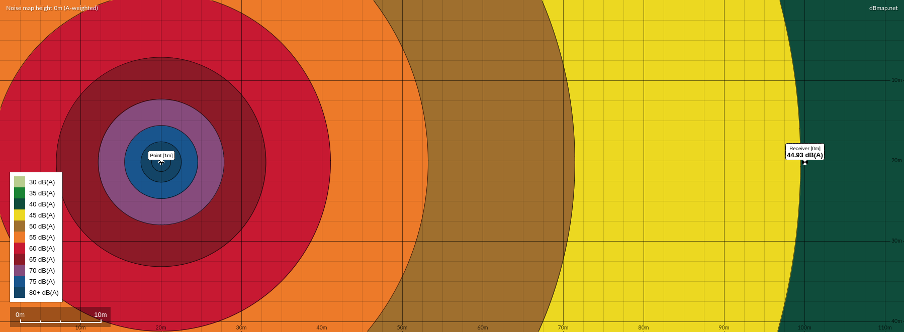
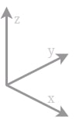

Wind Energy Analysis Tools
This repository contains a collection of Jupyter notebooks developed as a part of the special course "Noise and Visual Impact Analysis in Wind Energy" at DTU (Technical University of Denmark). The notebooks are designed to assist in wind turbine impact assessments, specifically addressing shadow flickering, noise calculations (ISO 9613-2), and generating visual impact assessments using the Google Street View API.
Disclaimer
This project is a student initiative, and as such, the author does not assume any liability or provide any warranty for the quality of the product. Users are encouraged to contribute to further development under the terms of the GNU Affero General Public License v3.0 license agreement.
Usage
- Clone the repository using the following command:
git clone https://github.com/FPWRasmussen/DTU-Special-Course.git - Execute each individual Jupyter Notebook as needed. You can find the notebooks in the
srcdirectory. - Alternatively, you can access the deployed GitHub page for direct access to the Jupyter Notebooks:
https://fpwrasmussen.github.io/DTU-Special-Course/
Acknowledgments
Special thanks to the course instructors at the DTU Wind department for their guidance and support during the development of these tools.
Elevation Handler#
The Shuttle Radar Topography Mission (SRTM) conducted by NASA in February 2000 [4] remains a important mission for collecting precise topographic data of the Earth’s surface. One of the notable resolutions of the SRTM data is 30 meters, indicating that elevation values are recorded at intervals of 30 meters across the Earth’s surface.
Spatially, the data is organized into a grid structure, where each cell represents a spatial unit of 1 degree of latitude by 1 degree of longitude. This 1° x 1° resolution simplifies the representation of geographic locations.
Show code cell source
import os
import sys
from pathlib import Path
sys.path.append(str(Path(os.getcwd()).parent.parent))
from src.utils import (
ElevationHandler,
print_code,
transform_coordinates,
resample_to_straight_axis,
generate_voxel_map,
download_elevation
)
import numpy as np
import matplotlib.pyplot as plt
from matplotlib.patches import Rectangle
from cartopy.io.img_tiles import GoogleTiles
import cartopy.crs as ccrs
from matplotlib.ticker import AutoLocator
from IPython.core.display import HTML
from matplotlib.colors import ListedColormap
from matplotlib.cm import ScalarMappable
import ipywidgets
Import of SRTM data#
To utilize the data, a script has been developed. This script automates the download of the pertinent .hgt files and seamlessly integrates them to construct the comprehensive elevation map.
HTML(print_code(download_elevation))
def download_elevation(map_boundaries):
long_min = np.minimum(map_boundaries[0], map_boundaries[1])
long_max = np.maximum(map_boundaries[0], map_boundaries[1])
lat_min = np.minimum(map_boundaries[2], map_boundaries[3])
lat_max = np.maximum(map_boundaries[2], map_boundaries[3])
long_range = np.arange(np.floor(long_min), np.ceil(long_max), 1)
lat_range = np.arange(np.floor(lat_min), np.ceil(lat_max), 1)
merged_map = np.zeros([len(lat_range)*3601, len(long_range)*3601])
for i, latitude in enumerate(lat_range):
for j, longitude in enumerate(long_range):
if latitude < 0:
lat_str = "S"+str(int(np.floor(-latitude))).zfill(2)
else:
lat_str = "N"+str(int(np.floor(latitude))).zfill(2)
if longitude < 0:
long_str = "W"+str(int(np.floor(-longitude))).zfill(3)
else:
long_str = "E"+str(int(np.floor(longitude))).zfill(3)
output_name = f"{lat_str}{long_str}"
# hgt_gz_file = "../../temp/"+output_name+".hgt.gz"
# hgt_file = '../../temp/'+ output_name+ '.hgt'
hgt_gz_file = Path.joinpath(ROOT_DIR, "temp/"+output_name+".hgt.gz")
hgt_file = Path.joinpath(ROOT_DIR, "temp/"+output_name+".hgt")
if os.path.exists(hgt_file):
# print("File exists!")
pass
else:
print("File does not exist.")
url = f"https://s3.amazonaws.com/elevation-tiles-prod/skadi/{lat_str}/{output_name}"+".hgt.gz"
urllib.request.urlretrieve(url, hgt_gz_file)
with gzip.open(hgt_gz_file, 'rb') as f_in:
with open(hgt_file, 'wb') as f_out:
f_out.write(f_in.read())
os.remove(hgt_gz_file)
with open(hgt_file, 'rb') as f:
data = np.frombuffer(f.read(), np.dtype('>i2')).reshape((3601, 3601))
data = np.flip(data, axis=0)
merged_map[i*3601:(i+1)*3601, j*3601:(j+1)*3601] = data
srtm_latitude = np.linspace(np.floor(lat_min), np.ceil(lat_max), merged_map.shape[0])
srtm_longitude = np.linspace(np.floor(long_min), np.ceil(long_max), merged_map.shape[1])
return srtm_longitude, srtm_latitude, merged_map
Test of function#
A simple test is performed to test the script.
map_boundaries = np.array([9.6, 9.7, 56.05, 56.2])
srtm_longitude, srtm_latitude, merged_map = download_elevation(map_boundaries)
vmin = 0
vmax = float('%.2g' % np.max(merged_map)) # round down to two significant digits
levels = np.linspace(vmin, vmax, 10)
fig, ax = plt.subplots(figsize = (10, 7))
ct = ax.contourf(srtm_longitude, srtm_latitude, merged_map,
levels = levels, vmin = vmin, vmax = vmax, extend = "both",
cmap='terrain')
plt.colorbar(ct, ax = ax, label='Elevation (meters)')
# Add the rectangle to the plot
rect = Rectangle(
xy=(map_boundaries[0], map_boundaries[2]), # bottom-left corner
width=(map_boundaries[1] - map_boundaries[0]), # width
height=(map_boundaries[3] - map_boundaries[2]), # height
linewidth=2,
edgecolor='k',
facecolor='none')
ax.add_patch(rect)
rect.set_zorder(3)
ax.grid()
ax.set_aspect('equal')
ax.set_title('Elevation Map')
ax.set_xlabel('Longitude')
ax.set_ylabel('Latitude')
plt.tight_layout()
plt.show()

The depicted plot showcases the complete data range for a singular SRTM file. The small black square displays the subdomain of the map, as defined by the map_boundaries. Given the substantial file size of a single SRTM30 dataset, approximately (\(3601 \cdot 3601 \approx 1.3\cdot10^7\)), and considering that the boundaries frequently exceed those of a typical wind park, there is a need to scale down the dataset and confine the boundaries to the pertinent area. This task is achieved through the utilization of the following function:
HTML(print_code(ElevationHandler.generate_scaled_subarray))
def generate_scaled_subarray(self):
x_old = np.linspace(self.full_map_boundaries[0], self.full_map_boundaries[1], self.full_map.shape[1])
y_old = np.linspace(self.full_map_boundaries[2], self.full_map_boundaries[3], self.full_map.shape[0])
interp_spline = RectBivariateSpline(y_old, x_old, self.full_map)
x_new = np.linspace(self.map_boundaries[0], self.map_boundaries[1], self.map_shape[1])
y_new = np.linspace(self.map_boundaries[2], self.map_boundaries[3], self.map_shape[0])
self.scaled_subarray = interp_spline(y_new, x_new)
return self.scaled_subarray
The function uses bivariate spline interpolation to recalculate the elevation for the scaled elevation grid. The results of the function are plotted below.
map_shape = [250, 250]
elevation_handler = ElevationHandler(map_boundaries, map_shape)
vmin = np.minimum(0, float('%.2g' % np.max(elevation_handler.map_array)))
vmax = np.maximum(0, float('%.2g' % np.max(elevation_handler.map_array))) # round down to two significant digits
levels = np.linspace(vmin, vmax, 10)
fig, ax = plt.subplots(figsize = (10, 7))
ct = ax.contourf(elevation_handler.long_range, elevation_handler.lat_range, elevation_handler.map_array,
levels = levels, vmin = vmin, vmax = vmax, extend = "both",
cmap='terrain')
plt.colorbar(ct, ax = ax, label='Elevation (meters)')
ax.grid()
ax.set_aspect('equal')
ax.set_title('Elevation Map')
ax.set_xlabel('Longitude')
ax.set_ylabel('Latitude')
plt.tight_layout()
plt.show()

Coordinate Reference Systems#
For effective utilization of elevation data in computations for shadow and noise solvers, it is advantageous to transform the Coordinate Reference System (CRS) from EPSG:4326 to EPSG:3035. The advantage of EPSG:3035 lies in the fact that each integer step in the longitude or latitude direction approximately corresponds to a meter (note that EPSG:3035 is specifically accurate for Europe).
HTML(print_code(transform_coordinates))
def transform_coordinates(long_list, lat_list, input_crs_str = "EPSG:4326", output_crs_str = "EPSG:3035"):
input_crs = pyproj.CRS(input_crs_str) # WGS84
output_crs = pyproj.CRS(output_crs_str)
transformer = pyproj.Transformer.from_crs(input_crs, output_crs, always_xy=True)
if hasattr(long_list, "__len__"):
trans_cords = np.empty((len(lat_list), len(long_list), 2))
else:
trans_cords = np.empty((1, 1, 2))
long_list = [long_list]
lat_list = [lat_list]
for i, lon in enumerate(long_list):
for j, lat in enumerate(lat_list):
x, y = transformer.transform(lon, lat)
trans_cords[j, i, 0] = x
trans_cords[j, i, 1] = y
return trans_cords
The map with transformed coordinates can be found below.
trans_cords = transform_coordinates(elevation_handler.long_range, elevation_handler.lat_range, input_crs_str = "EPSG:4326", output_crs_str = "EPSG:3035")
vmin = np.minimum(0, float('%.2g' % np.max(elevation_handler.map_array)))
vmax = np.maximum(0, float('%.2g' % np.max(elevation_handler.map_array))) # round down to two significant digits
levels = np.linspace(vmin, vmax, 10)
fig, ax = plt.subplots(figsize = (10, 7))
ct = ax.contourf(trans_cords[:,:,0], trans_cords[:,:,1], elevation_handler.map_array,
levels = levels, vmin = vmin, vmax = vmax, extend = "both",
cmap='terrain')
plt.colorbar(ct, ax = ax, label='Elevation (meters)')
ax.grid()
ax.set_aspect('equal')
ax.set_title('Elevation Map')
ax.set_xlabel('Longitude')
ax.set_ylabel('Latitude')
plt.tight_layout()
plt.show()

Rotation of map#
Given that the transformation to different Coordinate Reference Systems (CRS) introduces a slight rotation to the map, particularly noticeable on a larger length scale and at higher latitudes, the subsequent function is designed to produce a subarray of the original array with straight axes through cubic interpolation.
HTML(print_code(resample_to_straight_axis))
def resample_to_straight_axis(trans_cords, map_array, shape):
x_min = np.max(trans_cords[:,0,0])
x_max = np.min(trans_cords[:,-1,0])
y_min = np.max(trans_cords[0,:,1])
y_max = np.min(trans_cords[-1,:,1])
X, Y = np.meshgrid(np.linspace(x_min, x_max, shape[0]), np.linspace(y_min, y_max, shape[1]))
Z = griddata((trans_cords[:,:,0].flatten(), trans_cords[:,:,1].flatten()), map_array.flatten(), (X, Y), method='cubic')
return X, Y, Z
shape = [200, 200]
X, Y, Z = resample_to_straight_axis(trans_cords, elevation_handler.map_array, shape)
vmin = np.minimum(0, float('%.2g' % np.max(Z)))
vmax = np.maximum(0, float('%.2g' % np.max(Z))) # round down to two significant digits
levels = np.linspace(vmin, vmax, 10)
fig, ax = plt.subplots(figsize = (10, 7))
ct = ax.contourf(X, Y, Z,
levels = levels, vmin = vmin, vmax = vmax, extend = "both",
cmap='terrain')
plt.colorbar(ct, ax = ax, label='Elevation (meters)')
ax.grid()
ax.set_aspect('equal')
ax.set_title('Elevation Map')
ax.set_xlabel('Longitude')
ax.set_ylabel('Latitude')
plt.tight_layout()
plt.show()
Google Maps Layer#
To enhance result visualization, incorporating satellite imagery underneath the outcomes can provide a valuable reference for the affected areas of shadow flickering and noise disturbance. Google Maps images can be seamlessly integrated, as illustrated below:
fig, ax = plt.subplots(subplot_kw={'projection': ccrs.epsg(3035)}, figsize=(10, 10))
vmin = np.minimum(0, float('%.2g' % np.max(Z)))
vmax = np.maximum(0, float('%.2g' % np.max(Z))) # round down to two significant digits
levels = np.linspace(vmin, vmax, 10)
ct = ax.contourf(X, Y, Z,
levels = levels, vmin = vmin, vmax = vmax, extend = "both",
cmap='terrain', alpha = 0.5)
plt.colorbar(ct, ax = ax, label='Elevation (meters)')
# ax.set_extent(map_boundaries)
imagery = GoogleTiles(style = "satellite") # Valid styles: street, satellite, terrain, only_streets
ax.add_image(imagery, 14) # 16
ax.set_xticks([0], crs=ccrs.epsg(3035))
ax.set_yticks([0], crs=ccrs.epsg(3035))
ax.xaxis.set_major_locator(AutoLocator())
ax.yaxis.set_major_locator(AutoLocator())
plt.grid()
ax.set_aspect('equal')
ax.set_title('Elevation Map')
ax.set_xlabel('Longitude')
ax.set_ylabel('Latitude')
plt.show()

Convert Elevation to Voxel Map#
For the computation of shadow flickering, a ray tracing algorithm is employed to determine the trajectory of sun rays. This algorithm is made for a voxel environment. The terrain undergoes conversion into a voxel map through an iterative process that spans each elevation level—from the lowest to the highest in the map. For each iteration, a boolean slice is generated, where a True boolean signifies elevations below the current iteration, effectively indicating the terrain. Each slice is thereafter stacked on eachother to form the 3D voxel map. The script for the voxel map generator is presented below.
HTML(print_code(generate_voxel_map))
def generate_voxel_map(map_boundaries, shape):
srtm_longitude, srtm_latitude, map_array = download_elevation(map_boundaries)
map_array, sublong_points, sublat_points, map_boundaries = generate_subarray(map_array, srtm_longitude, srtm_latitude, map_boundaries)
map_array, sublong_points, sublat_points = scale_array_func(map_array, sublong_points, sublat_points, new_shape = shape)
trans_cords = transform_coordinates(sublong_points, sublat_points, input_crs_str = "EPSG:4326", output_crs_str = "EPSG:3035")
X, Y, map_array = resample_to_straight_axis(trans_cords, map_array, shape)
map_array_min = np.floor(np.min(map_array)).astype(int)
map_array_max = np.ceil(np.max(map_array)).astype(int)
elevation_range = np.arange(map_array_min, map_array_max, 1)
voxel_map = np.zeros((map_array.shape[0], map_array.shape[1], len(elevation_range)), dtype=np.uint8)
for i, elev in enumerate(elevation_range):
voxel_map[:, :, i][map_array > elev] = 1
return X, Y, voxel_map, map_array
Test of function#
The code is executed by specifying the map boundararies and pixel shape of the map.
map_boundaries = np.array([9.65, 9.75, 56.05, 56.15])
shape = [200, 200]
X, Y, voxel_map, map_array = generate_voxel_map(map_boundaries, shape)
colors = ["blue", "brown"]
cmap = ListedColormap(colors)
sm = ScalarMappable(cmap=cmap)
sm.set_array(voxel_map)
fig, ax = plt.subplots(figsize = (10, 7))
ct = ax.pcolormesh(X, Y, voxel_map[:, :, 50],
cmap=cmap, alpha = 0.5)
plt.colorbar(sm, ax = ax, label='<-- Below (Level) Above -->', ticks = [0, 1])
ax.grid()
ax.set_aspect('equal')
ax.set_title('Voxel Map')
ax.set_xlabel('Longitude')
ax.set_ylabel('Latitude')
plt.tight_layout()
plt.show()

Noise Map#
Show code cell source
import os
from pathlib import Path
import sys
sys.path.append(str(Path(os.getcwd()).parent.parent))
from src.utils import ElevationHandler, A_weighting, import_point_source_data, calc_extent, solve_noise_map
import numpy as np
import matplotlib.pyplot as plt
from cartopy.io.img_tiles import GoogleTiles
import cartopy.crs as ccrs
import pandas as pd
ISO 9613-2: Calculation of Noise from Wind Turbines#
ISO 9613-2 is an international standard that provides guidelines for the calculation of outdoor sound propagation from industrial sources [13]. The widely utilized engineering model outlined in the International Standard provides a simplified and structured approach for calculating sound propagation in accordance with legal requirements. While the model does not explicitly consider diverse meteorological conditions or allow for customized calculations based on wind speed, wind direction, or temperature gradients, it effectively addresses the majority of parameter variations through the predicted mean sound pressure level. Consequently, it is commonly employed to describe downwind propagation or sound transmission under well-developed moderate ground-based temperature inversions.
This implementation of the standard incorporates four distinct forms of attenuation: geometric spreading attenuation from the point source (\(A_{div}\)), atmospheric absorption attenuation (\(A_{atm}\)), attenuation due to ground effects (\(A_{gr}\)), and attenuation resulting from barriers like terrain (\(A_{bar}\)). These attenuations are combined such that the total attenuation is given by:
In this model, wind turbines are treated as point sources of noise emission, located at the hub of each turbine. The model considers the sound power level for each octave band of each point source. The noise level for each map tile is then calculated as:
Here, \(L_{fT}\) represents the sound power level of the individual point source for each octave band:
\(A_f\) denotes the A-weighting function that ensures normalization to 0 dB at a frequency of 1000 Hz, and can be calculated as such:
As seen below, the A-weighting mostly impacts the influence of the lower frequencies.
f = np.logspace(1, 4, 100, endpoint=True)
Af = A_weighting(f)
fig, axes = plt.subplots(figsize = (7,3))
axes.semilogx(f, Af, "r--", label = "A-weighting")
axes.set(xlabel = "f [Hz]",
ylabel = "Gain [dB]")
axes.grid()
axes.legend()
plt.tight_layout()

Test of function#
Below a few instances of noise calculations for various wind parks, each with distinct input parameters.
Wind Park Svanninge Bjerge (Fictive)#
Fictive wind farm situated in the hills of Svanninge Bjerge in Faaborg, Denmark. Unrealistically low turbines were employed for the simulation to highlight the effects of barrier attenuation in the model. A ground factor of 0.5 was applied.
point_source_data = pd.DataFrame(data=[
{
"latitude": 55.124232837087455,
"longitude": 10.270998350214546,
"h": 20,
"octave_band": {
"63": 90.0,
"125": 95.0,
"250": 100.0,
"500": 102.5,
"1000": 104.0,
"2000": 98.5,
"4000": 93.0,
"8000": 89.5
}
},
{
"latitude": 55.12513732938618,
"longitude": 10.264118289154899,
"h": 30,
"octave_band": {
"63": 88.0,
"125": 92.5,
"250": 98.0,
"500": 101.0,
"1000": 105.5,
"2000": 97.0,
"4000": 91.5,
"8000": 88.0
}
},
{
"latitude": 55.12851309352396,
"longitude": 10.268908586941558,
"h": 25,
"octave_band": {
"63": 85.0,
"125": 90.0,
"250": 95.5,
"500": 100.0,
"1000": 102.0,
"2000": 96.5,
"4000": 92.0,
"8000": 89.0
}
}
])
map_shape = [50, 50]
dist = 1500
map_boundaries = calc_extent(point_source_data, dist)
elevation_handler = ElevationHandler(map_boundaries, map_shape)
LDW = solve_noise_map(elevation_handler, point_source_data, ground_factor = 0.5)
vmin = 25
vmax = float('%.2g' % np.max(LDW)) # round down to two significant digits
levels = np.arange(vmin, vmax, 5)
plt.figure(figsize=(9, 9))
imagery = GoogleTiles(style = "satellite")
ax = plt.axes(projection=imagery.crs)
ax.set_extent(map_boundaries)
cp = ax.contour(elevation_handler.long_range, elevation_handler.lat_range, LDW,
alpha = 1, cmap = "jet", transform=ccrs.PlateCarree(),
levels = levels, vmin = vmin, vmax = vmax, extend = "both")
ax.scatter(point_source_data.longitude, point_source_data.latitude, marker = "x", color = "red", transform=ccrs.PlateCarree())
plt.colorbar(cp, ax = ax, label = "Noise Level [dB(A)]")
plt.clabel(cp, fontsize = 9, inline=1)
ax.add_image(imagery, 14) # 16
gl = ax.gridlines(crs=ccrs.PlateCarree(), draw_labels=True, linewidth=2, color='gray', alpha=0.5, linestyle='--')
gl.top_labels = False
gl.right_labels = False
plt.suptitle("Svanninge Bjerge Wind Park")
plt.tight_layout
plt.show()

Wind Park Prøvestenen#
Prøvestenen Wind Park is a wind facility situated in Copenhagen, Denmark, featuring 3 turbines with a total capacity of 6.0 MW. The specific turbine models and hub heights are Vestas V80-2.0 MW VCS Mark 7. The wind park was established in 2013. In compliance with the Vindmøllebekendtgørelsen noise regulations [9], the Jupyter Notebook simulations uses a temperature of 10°C, a relative humidity of 80%, and a receiver height of 1.5 meters. The computations for Prøvestenen Wind Park were done with a ground factor of \(G = 0.0\) to closely align with the calculation methods prescribed in the Vindmøllebekendtgørelsen.
dist = 1500
point_source_data = import_point_source_data("Prøvestenen_noise.json")
map_boundaries = calc_extent(point_source_data, dist)
map_shape = [50, 50]
map_boundaries = calc_extent(point_source_data, dist)
elevation_handler = ElevationHandler(map_boundaries, map_shape)
LDW = solve_noise_map(elevation_handler, point_source_data, ground_factor = 0, temp = 10, rh = 80, receiver_height=1.5)
vmin = 24
vmax = float('%.2g' % np.max(LDW))
levels = np.arange(vmin, vmax, 5)
plt.figure(figsize=(9, 9))
imagery = GoogleTiles(style = "satellite")
ax = plt.axes(projection=imagery.crs)
ax.set_extent(map_boundaries)
cp = ax.contour(elevation_handler.long_range, elevation_handler.lat_range, LDW,
alpha = 1, cmap = "jet", transform=ccrs.PlateCarree(),
levels = levels, vmin = vmin, vmax = vmax, extend = "both")
ax.scatter(point_source_data.longitude, point_source_data.latitude, marker = "x", color = "red", transform=ccrs.PlateCarree())
plt.colorbar(cp, ax = ax, label = "Noise Level [dB(A)]")
plt.clabel(cp, fontsize = 9, inline=1)
ax.add_image(imagery, 14) # 16
gl = ax.gridlines(crs=ccrs.PlateCarree(), draw_labels=True, linewidth=2, color='gray', alpha=0.5, linestyle='--')
gl.top_labels = False
gl.right_labels = False
plt.suptitle("Prøvestenen Wind Park")
plt.tight_layout
plt.show()
Comparison with Prøvestenen EIA#
The environmental impact assessment conducted for Prøvestenen utilized WindPRO version 2.7.999 Beta for the calculations, employing the methodologies outlined in the Vindmøllebekendtgørelsen noise regulations [9].

Fig 1: Calculated noise propagation for the turbines at a wind speed of 8 m/s (Source: [10]).
Wind Park Juurakko#
Juurakko Wind Park is a 40 MW wind facility located in Kalajoki, Finland, featuring 7 Nordex N163 5.7 MW turbines with a hub height of 148 meters, built in 2022 [8]. The calculations are done using a ground factor of \(G = 0.4\) and using a receiver height of 4 meters.
map_boundaries = [24.025, 24.2, 64.285, 64.37]
point_source_data = import_point_source_data("Juurakko.json")
map_shape = [50, 50]
elevation_handler = ElevationHandler(map_boundaries, map_shape)
LDW = solve_noise_map(elevation_handler, point_source_data, ground_factor = 0.4, temp = 15, rh = 70, receiver_height=4)
vmin = 25
vmax = float('%.2g' % np.max(LDW)) # round down to two significant digits
levels = np.arange(vmin, vmax, 5)
plt.figure(figsize=(9, 9))
imagery = GoogleTiles(style = "satellite")
ax = plt.axes(projection=imagery.crs)
ax.set_extent(map_boundaries)
cp = ax.contour(elevation_handler.long_range, elevation_handler.lat_range, LDW,
alpha = 1, cmap = "jet", transform=ccrs.PlateCarree(),
levels = levels, vmin = vmin, vmax = vmax, extend = "both")
ax.scatter(point_source_data.longitude, point_source_data.latitude, marker = "x", color = "red", transform=ccrs.PlateCarree())
plt.colorbar(cp, ax = ax, label = "Noise Level [dB(A)]")
plt.clabel(cp, fontsize = 9, inline=1)
ax.add_image(imagery, 14) # 16
gl = ax.gridlines(crs=ccrs.PlateCarree(), draw_labels=True, linewidth=2, color='gray', alpha=0.5, linestyle='--')
gl.top_labels = False
gl.right_labels = False
plt.suptitle("Juurakko Wind Park")
plt.tight_layout
plt.show()
Comparison with Juurakko EIA#
As an integral step in the wind farm planning process, an environmental impact assessment was conducted. This assessment utilized ISO 9613-2 for predicting the noise levels generated by the turbines. The noise assessment conducted in the study by Juurakko utilized WindPro v3.3 WindPro [6]. This software automatically applies a 2 dB penalty for each turbine when the base height level between the turbine and receptor exceeds 60 meters. This penalty is directly incorporated into the .json file, resulting in an assigned noise level of 110.7 dB for each turbine.
{kind=link}
Fig 2: Calculated noise propagation for the turbines at 107.2 dB(A) + 1.5 dB(A) (Source: [8]).
Geometrical spreading of sound#
As a point source extends from its origin, the intensity diminishes inversely proportional to the distance traveled, following the Inverse-square law. In the context of noise propagation, this phenomenon significantly influences the attenuation of turbine noise levels.

Fig 1: S denotes the noise source, and r represents the measured points. The lines illustrate noise propagation from the sources. The total noise lines, linked to source strength, remain constant, but denser lines indicate a louder noise field. The line density is inversely proportional to distance from the source squared, reflecting increased surface area on a sphere. Consequently, noise intensity inversely scales with the square of the distance from the source (Source).
Show code cell source
import numpy as np
import matplotlib.pyplot as plt
from matplotlib.animation import FuncAnimation, PillowWriter
from IPython.display import Image
Derivation#
The intensity, \(I\), measured in watts per square meter (\(W/m^2\)), is a fundamental quantity in acoustics. The sound power of a source, denoted as \(P\), can be related to intensity through the formula:
Here, \(z_0\) represents the characteristic specific acoustic impedance as is equal to \(z_0 = 400 \text{Pa} \cdot \text{s}/\text{m}\).
Rearranging the equation in terms of sound power \(P\), we get:
In the context of a reference sound power \(P_0 = 10^{-12} \text{W}\), the ratio \(\dfrac{P}{P_0}\) can be expressed as:
Where the reference sound pressure is \(p_0 = 2\cdot 10^{-5} \text{Pa}\). Taking the logarithm of both sides, we arrive at:
This expression can be further simplified to represent the sound power level as \(L_W = 10\log\left(\dfrac{P}{P_0}\right)\) and the sound pressure level as \(L_P = 10\log\left(\dfrac{p^2}{p_0^2}\right)\):
With the used reference values \(\dfrac{p_0^2}{P_0 z_0} = 1\), and the equation simplifies to:
Lastly, be rearranging the equation, the final expression for the sound pressure level can be found:
This derivation provides insights into the relationship between sound power, intensity, and their representation in logarithmic scales.
Application of function#
Utilizing the formula on a fluctuating noise signal, oscillating between 0 dB and 100 dB, reveals the impact of geometrical spreading on the noise amplitude. It’s worth mentioning that this effect is not exclusive to oscillating values; I chose to create the plot simply because of its visually interesting representation.
width = 3000 # Width of the simulation grid
height = width # Height of the simulation grid
center_x =0 # # X-coordinate of the point source
center_y = 0 # # Y-coordinate of the point source
frequency = 0.5 # frequency
amplitude = 100 # Amplitude of the oscillation
speed = 300 # Speed of wave propagation
duration = 3 # Duration of the simulation
fps = 10 # Frames per second
res = 500
wavelength = speed / frequency
angular_frequency = 2 * np.pi * frequency
wave_number = 2 * np.pi / wavelength
x, y = np.meshgrid(np.linspace(-width, width, res), np.linspace(-height, height, res))
fig,ax = plt.subplots()
time = 0 / fps
distance = np.sqrt((x - center_x)**2 + (y - center_y)**2)
wave = np.abs(np.maximum(0, (amplitude - 20*np.log10(distance) - 11)) * np.sin(angular_frequency * time - wave_number * distance))
cb = ax.imshow(wave, cmap='jet', origin='lower', extent=[-width, width, -height, height], vmin=0, vmax=amplitude)
plt.colorbar(cb, ax= ax, label = "SPL [dB]")
ax.set(xlabel= " X [m]",
ylabel = "Y [m]")
plt.close()
def update(frame):
global grid
time = frame / fps
distance = np.sqrt((x - center_x)**2 + (y - center_y)**2)
wave = np.abs(np.maximum(0,(amplitude - 20*np.log10(distance) - 11)) * np.sin(angular_frequency * time - wave_number* distance))
ax.imshow(wave, cmap='jet', origin='lower', extent=[-width, width, -height, height], vmin=0, vmax=amplitude)
animation = FuncAnimation(fig, update, frames= int(duration * fps), interval= 1/fps)
animation.save('../../temp/ripple.gif',writer=PillowWriter(fps=fps))
Image(open('../../temp/ripple.gif','rb').read())
Atmospheric Attenuation#
Atmospheric attenuation of sound is the decrease in sound intensity as it travels through the Earth’s atmosphere. Various factors contribute to this attenuation, such as absorption and scattering. Sound absorption occurs when sound energy is converted into heat energy as it interacts with atmospheric molecules. This process is frequency-dependent, as it can be seen below, with higher frequencies experiencing greater attenuation. The calculations in this section is based on Bugaru et al. [2] and Technical Committee ISO/TC 43/SC 1 [12].
Show code cell source
import os
from pathlib import Path
import sys
sys.path.append(str(Path(os.getcwd()).parent.parent))
from src.utils import atmospheric_absorption, print_code
import numpy as np
import matplotlib.pyplot as plt
from IPython.core.display import HTML
Sound attenuation coefficient#
To calculate atmospheric attenuation, it is necessary to determine the sound attenuation coefficient, \(\alpha\). This coefficient quantifies the amount of sound absorbed by the air per meter traveled from the sound source. The sound attenuation coefficient is determined by considering factors such as frequency, temperature, relative humidity, and ambient atmospheric pressure. By incorporating these variables into the calculation, the attenuation of sound in the atmosphere can be accurately estimated. The power level of the noise decreases in a linear manner with distance, and it can be calculated using the formula \(A_{atm} = \alpha \cdot d\).
HTML(print_code(atmospheric_absorption))
def atmospheric_absorption(f=1000, t=10, rh=80, ps=1.01325e5):
"""
Calculate the attenuation coefficient for a given frequency, temperature, relative humidity, and atmospheric pressure.
Input:
f: frequency in Hz
t: temperature in C
rh: relative humidity in %
ps: atmospheric pressure in Pa
Output:
alpha: attenuation coefficient
"""
# Convert atmospheric pressure to a variable that won't be modified
ps0 = 1.01325e5
# Convert temperature from Celsius to Kelvin
T = t + 273.15
# Reference temperature in Kelvin
T0 = 293.15
# Reference temperature in Kelvin for saturation vapor pressure
T01 = 273.16
# Calculate saturation vapor pressure constant
Csat = -6.8346 * (T01/T)**1.261 + 4.6151
# Calculate saturation vapor pressure
rhosat = 10**Csat
# Calculate relative humidity ratio
H = rhosat * rh * ps0 / ps
# Calculate frequency-dependent term for attenuation due to water vapor
frn = (ps / ps0) * (T0/T)**0.5 * (9 + 280 * H * np.exp(-4.17 * ((T0/T)**(1/3) - 1)))
# Calculate frequency-dependent term for attenuation due to oxygen
fro = (ps / ps0) * (24.0 + 4.04e4 * H * (0.02 + H) / (0.391 + H))
# Calculate the attenuation coefficient
alpha = 20/np.log(10) * f**2 * (1.84e-11 / ( (T0/T)**0.5 * ps / ps0 )+ (T/T0)**(-2.5)* (0.10680 * np.exp(-3352 / T) * frn / (f**2 + frn * frn)+ 0.01278 * np.exp(-2239.1 / T) * fro / (f**2 + fro * fro)))
return alpha
Frequency influence#
Lets visualize the atmospheric absorption for different relative humidities and frequencies.
t = 10 # temperature
fs = np.logspace(1, 4, num=100, endpoint=True, base=10) # frequency range
alphas = np.zeros(fs.shape) # initiate alpha
rhs = (0, 10, 20, 40, 60, 80, 100) # relative humidity range
plt.figure()
for rh in rhs:
for i, f in enumerate(fs):
alphas[i] = atmospheric_absorption(f, t, rh)
plt.loglog(fs, alphas, label='rh: %d'%rh)
plt.title(f'Absorption coefficient at {t} degrees')
plt.grid(True)
plt.xlabel('Frequency[Hz]')
plt.ylabel('Absorption coefficient [dB/m]')
plt.legend(loc='best')
plt.tight_layout()
plt.show()
As shown in the graph above, the frequency of the noise significantly influences the level of atmospheric absorption. Higher frequencies experience greater absorption, resulting in reduced sound levels. Generally, with a few exceptions, higher relative humidity contributes to lower levels of absorption.
Relative humidity influence#
rh_list = np.linspace(0, 100, 1000)
f_list = [63, 125, 250, 500, 1000, 2000, 4000, 8000]
fig, ax = plt.subplots(figsize = (6,6))
for f in f_list:
Aatm = atmospheric_absorption(f, 20, rh_list)
ax.plot(rh_list, Aatm, label = f"f: {f} Hz")
ax.legend()
ax.set(xlabel = "Relative Humidity (%)",
ylabel = 'Absorption coefficient [dB/m]')
ax.grid()
plt.tight_layout()
plt.show()
As observed above, relative humidity also exerts a significant influence on atmospheric absorption. Particularly in the range of 10-30% relative humidity, there appears to be a notable increase in absorption.
Temperature influence#
t_list = np.linspace(0, 40, 1000)
f_list = [63, 125, 250, 500, 1000, 2000, 4000, 8000]
fig, ax = plt.subplots(figsize = (6,6))
for f in f_list:
Aatm = atmospheric_absorption(f, t_list, rh=70)
ax.plot(t_list, Aatm, label = f"f = {f} Hz")
ax.legend()
ax.set(xlabel = "Temperature [°C]",
ylabel = 'Absorption coefficient [dB/m]')
ax.grid()
plt.tight_layout()
plt.show()
As seen from the above graph, temperature has a relatively minor impact on the overall level of absorption. In general, higher absorption rates are observed at lower temperatures.
Ground Effect#
The total ground attenuation is calcuated as the sum of the attenuation in the source, receiver and middle region.
The ground factor is determined by the type of ground in the specified region. A ground factor of \(G = 0\) indicates hard ground, suggesting an amplifying effect on the sound power level. When \(G = 1\), the ground is considered porous, indicating noise absorption. For values of \(G\) between 0 and 1, the ground is deemed mixed. The precise ground factor for wind turbine noise simulations is somewhat controversial, as a higher ground factor results in lower noise emission levels in simulations. Consequently, wind parks can be built closer to residential areas. However, typical values used generally fall between \(G = 0.7 \)[7] and \(G = 0.4\) [8].
Show code cell source
import numpy as np
import matplotlib.pyplot as plt
Calculation of ground attenuation#
The source and receiver attenuation \(A_s\) and \(A_r\) are generally only dependent on the ground factor \(G\) (except for f = 63 Hz where the attenuation is just equal to -1.5). However, for the 125, 250, 500, 1000 Hz octave bands, the attenuation is also dependant on the height \(h\) of the source or receiver above ground. \(d_p\) is the source-to-receiver distance, in metres, projected onto the ground planes.
The full calculatation for the attenuation in the source, receiver and middle region can be found in the table below.
Nominal midband frequency [Hz] |
\(A_s\) or \(A_r\) [dB] |
\(A_m\) [dB] |
|---|---|---|
63 |
\(-1.5\) |
\(-3q\) |
125 |
\(-1.5 + G\cdot a'(h)\) |
\(-3q(1-G)\) |
250 |
\(-1.5 + G\cdot b'(h)\) |
\(-3q(1-G)\) |
500 |
\(-1.5 + G\cdot c'(h)\) |
\(-3q(1-G)\) |
1000 |
\(-1.5 + G\cdot d'(h)\) |
\(-3q(1-G)\) |
2000 |
\(-1.5(1-G)\) |
\(-3q(1-G)\) |
4000 |
\(-1.5(1-G)\) |
\(-3q(1-G)\) |
8000 |
\(-1.5(1-G)\) |
\(-3q(1-G)\) |
Tab 1: Formulas for computing ground attenuation contributions in the octave bands, denoted as \(A_s\), \(A_r\), and \(A_m\) (Source: [13]).
where
As it can be seen from the table above, when the ground factor \(G=0\), indicating a hard and reflecting ground, the attenuation at both the source and receiver is -1.5 dB. This implies that the sound power level measured at the receiver is estimated to be 3 dB higher due to the ground effect.
Octave band 125 Hz to 1000 Hz#
As previously noted, the ground attenuation at the source and receiver for the octave bands 125 Hz, 250 Hz, 500 Hz, and 1000 Hz is determined using the prime functions defined earlier. These functions are dependent on the height of the source or receiver above the ground. The impact of height on the prime factor is illustrated below.
fs = [125, 250, 500, 1000]
dp = np.logspace(np.log10(20), np.log10(2000), 100)
hs = [[1.5, 3, 6, 7.5, 10], [1.5, 2.0, 2.5, 3.0, 3.5, 4.0, 5.0, 10.0], [1.5, 1.75, 2.0, 2.5, 3.0], [1.5, 3.0]]
fig, axes = plt.subplots(2, 2, figsize=(9, 8))
for i, f in enumerate(fs):
for h in hs[i]:
prime_labels = ['a', 'b', 'c', 'd']
prime_formulas = [
1.5 + 3.0 * np.exp(-0.12*(h - 5)**2) * (1 - np.exp(-dp/50)) + 5.7 * np.exp(-0.09 * h**2) * (1 - np.exp(-2.8 * 10**(-6) * dp**2)),
1.5 + 8.6 * np.exp(-0.09*h**2) * (1 - np.exp(-dp/50)),
1.5 + 14.0 * np.exp(-0.46*h**2) * (1 - np.exp(-dp/50)),
1.5 + 5.0 * np.exp(-0.9*h**2) * (1 - np.exp(-dp/50))
]
ax = axes[i // 2, i % 2]
ax.semilogx(dp, prime_formulas[i], label=f"h = {h}")
ax.grid(True)
ax.set(ylabel=f"{prime_labels[i]}' [dB]")
ax.text(0.05, 0.9, f"f = {f} Hz", transform=ax.transAxes)
plt.setp(axes, xlabel=r'$d_p$ [m]')
for ax in axes.flatten():
ax.legend(bbox_to_anchor=(0., 1.02, 1., .102), loc='lower left', ncols=3, borderaxespad=0.)
plt.tight_layout()
plt.show()

As observed earlier, the functions \(a'\), \(b'\), \(c'\) and \(d'\) all share a minimum limit of 1.5 dB. However, their overall values are dependent on the height of the source/receiver and the projected distance between them. Notably, the prime functions enable attenuations \(A_s\) and \(A_r\) to surpass those of other octave bands, particularly in more porous terrains characterized by a higher ground factor. In such cases, these octave bands possess the capacity to absorb a substantial amount of noise.
Barrier Attenuation#
When obstacles are positioned between the point source and the receiver in the line-of-sight, these barriers exert a damping effect on the noise perceived by the receiver. As noise rays encounter a barrier, diffraction occurs in the direction of the shortest path around the barrier. The ISO 9613-2 standard provides methods for calculating both lateral and vertical diffraction around barriers. However, since this model specifically incorporates terrain barriers (excluding barrier attenuation from screens or buildings), ISO 17534-3 suggests ignoring lateral diffractions [14]. Additionally, ISO 17534 outlines how higher-order diffractions should be handled, and this approach is integrated into the model. ISO 17534 specifies that the diffraction path should be treated like a tight ribbon extending from the source to the receiver.
{kind=link}
Fig 1: Diffraction path from the source to the receiver over multiple barriers (Source: [14]).
Show code cell source
import os
from pathlib import Path
import sys
sys.path.append(str(Path(os.getcwd()).parent.parent))
from src.utils import ElevationHandler, calc_diffraction, calc_diffraction_path, print_code
import matplotlib.pyplot as plt
import numpy as np
import pandas as pd
from IPython.core.display import HTML
Calculating the diffraction path#
The calculation of the diffraction path utilizes a recursive function called diffraction_recursion. The process begins with initiating the function using a straight line from the source to the receiver. Subsequently, the algorithm checks if any point along the terrain intersects with this line, indicating a collision between the line-of-sight and the terrain. In case of such a collision, the algorithm identifies the highest elevation difference between the line-of-sight and the terrain, designating the peak of the terrain at this point as a diffraction point. The original line is then split into two segments—one extending from the source to the diffraction point and the other from the diffraction point to the receiver. This recursive process continues until a path is defined from the source to the receiver without any terrain collisions.
HTML(print_code(calc_diffraction))
def calc_diffraction(source_height, receiver_height, terrain_x, terrain_y):
def diffraction_recursion(terrain_x, terrain_y, xt_new, yt_new, start_i, ylp, diffraction_index):
def calculate_line(xt, ylp):
slope = (ylp[-1] - ylp[0]) / (xt[-1] - xt[0])
intercept = ylp[0] - slope * xt[0]
yl = slope * xt + intercept
return yl
# Calculate line profile
yl = calculate_line(xt_new, ylp)
diff = (yl - yt_new)
# Check if the line collides with terrain
if np.any(diff < -1e-5):
yi_peak = np.argmin(diff) + start_i
yimax = np.argmin(diff) # Splitting index
diffraction_index.append([terrain_x[yi_peak], terrain_y[yi_peak]])
# Recursively process the left side of the splitting point
xt0, yt0 = xt_new[:yimax], yt_new[:yimax]
if len(xt0) > 2:
ylp0 = calculate_line(xt0, [yl[0], yt_new[yimax]])
diffraction_recursion(terrain_x, terrain_y, xt0, yt0, start_i, ylp0, diffraction_index)
# Recursively process the right side of the splitting point
xt1, yt1 = xt_new[yimax + 1:], yt_new[yimax + 1:]
if len(xt1) > 2:
start_i += yimax + 1
ylp1 = calculate_line(xt1, [yt_new[yimax], yl[-1]])
diffraction_recursion(terrain_x, terrain_y, xt1, yt1, start_i, ylp1, diffraction_index)
# Initialize variables
diffraction_index = [[0, terrain_y[0] + source_height]]
ylp = [terrain_y[0] + source_height, terrain_y[-1] + receiver_height]
xt_new, yt_new = terrain_x, terrain_y
start_i = 0
# Perform recursion to identify diffraction points
diffraction_recursion(terrain_x, terrain_y, xt_new, yt_new, start_i, ylp, diffraction_index)
# Sort and append the final point
diffraction_index = np.array(diffraction_index)
diffraction_index = diffraction_index[np.argsort(diffraction_index[:, 0])]
diffraction_index = np.vstack((diffraction_index, np.array([terrain_x[-1], terrain_y[-1] + receiver_height])))
return diffraction_index
Demonstration of code#
Here’s an example illustrating the calculation of the diffraction path between two points in the terrain.
terrain_data = ElevationHandler([11.9, 12.1, 54.9, 55.1], [200, 200]).map_array
start_pixel = (55, 55)
end_pixel = (170, 155)
source_height = 5
receiver_height = 5
length = int(np.hypot(end_pixel[0] - start_pixel[0], end_pixel[1] - start_pixel[1]))
x_coords, y_coords = np.linspace(start_pixel[0], end_pixel[0], length), np.linspace(start_pixel[1], end_pixel[1], length)
distance_points = np.linspace(0, length, length)
elevation_values = terrain_data.T[x_coords.astype(int), y_coords.astype(int)]
diffraction_path = calc_diffraction(source_height, receiver_height, distance_points, elevation_values)
fig, axes = plt.subplots(2, 1, gridspec_kw={'height_ratios': [3, 1]}, figsize=(6, 8))
terrain_plot = axes[0].pcolormesh(terrain_data, cmap ="terrain")
axes[0].plot([start_pixel[0], end_pixel[0]], [start_pixel[1], end_pixel[1]], 'ro:')
colorbar = fig.colorbar(terrain_plot, ax=axes[0], orientation='vertical', label='Terrain Elevation [m]')
axes[1].plot(distance_points, elevation_values, label="Terrain Elevation", color="green")
axes[1].plot(*diffraction_path.T, label="Diffraction Path")
axes[1].plot(*diffraction_path[1:-1].T, color="orange", marker="x",
label=f"Diffraction Point(s) = {diffraction_path.shape[0] - 2}", linestyle='None')
axes[1].plot([0, length], [elevation_values[0] + source_height, elevation_values[-1] + receiver_height], 'ro:',
label="Direct Line-of-Sight")
axes[1].set(xlabel = "dp [m]",
ylabel = "h [m]")
legend = axes[-1].legend(loc='upper center', bbox_to_anchor=(0.5, -0.25), ncol=2)
plt.tight_layout()
plt.show()

Calculation of barrier attenuation#
The total attenuation caused by a barrier, denoted as \(D_z\), can be computed using the formula:
\(\lambda\) represents the sound wavelength, \(C_2 = 20\) and is a reflection constant, \(C_3\) is a diffraction constant, \(z\) is the difference between the path lengths of diffracted and direct sound, calculated as \(z = (d_{ss} + e + d_{sr}) - d\), where \(e\) represents the distance between the diffraction edges in the case of multiple diffractions. The correction factor for meteorological conditions, \(K_{met}\), is defined as:
The diffraction constant \(C_3\) is defined as:
Visualization of Diffraction Length#
Presented below is a concise visualization illustrating the disparity between the direct path and the diffraction path. It’s crucial to observe that when these two distances diverge, the noise is anticipated to intersect with the terrain, and barrier attenuation is factored into the calculation for the sound pressure level at that location. Conversely, if the diffraction path and direct path align, indicating no collision with the terrain, the barrier attenuation is disregarded.
map_boundaries = [11.9, 12.1, 54.9, 55.1]
map_shape = [100, 100]
elevation_handler = ElevationHandler(map_boundaries, map_shape)
point_source_data = pd.DataFrame(data=[{
"latitude": 55,
"longitude": 12,
"h": 20}]).iloc[0]
map_shape = [200, 200]
dp, d, dss, dsr, e = calc_diffraction_path(elevation_handler, point_source_data)
diff_path = dsr+dss+e
diff_path[diff_path == 0] = d[diff_path == 0]
fig, axes = plt.subplots(2,2, figsize=(10, 8))
pcm1 = axes[0, 0].contourf(elevation_handler.long_range, elevation_handler.lat_range, elevation_handler.map_array, cmap = "terrain")
plt.colorbar(pcm1, ax = axes[0,0], label = "Elevation [m]")
axes[0, 0].scatter(point_source_data.longitude, point_source_data.latitude, marker = "x", color = "red", s = 100)
pcm2 = axes[0, 1].contourf(elevation_handler.long_range, elevation_handler.lat_range, d, cmap = "terrain")
plt.colorbar(pcm2, ax = axes[0, 1], label = "Direct path to receiver, d [m]")
axes[0, 1].scatter(point_source_data.longitude, point_source_data.latitude, marker = "x", color = "red", s = 100)
pcm3 = axes[1, 0].contourf(elevation_handler.long_range, elevation_handler.lat_range, diff_path, cmap = "terrain")
plt.colorbar(pcm3, ax = axes[1, 0], label = r"Diffraction path to receiver, ($d_{sr} + e + d_{ss}$) [m]")
axes[1, 0].scatter(point_source_data.longitude, point_source_data.latitude, marker = "x", color = "red", s = 100)
pcm4 = axes[1, 1].contourf(elevation_handler.long_range, elevation_handler.lat_range, (diff_path-d), cmap = "terrain")
plt.colorbar(pcm4, ax = axes[1, 1], label = "Difference between direct and diffraction path [m]")
axes[1, 1].scatter(point_source_data.longitude, point_source_data.latitude, marker = "x", color = "red", s = 100)
for ax in axes.flatten():
ax.set(xlabel = "Longitude",
ylabel = "Latitude")
plt.tight_layout()
plt.show()

Meteorological conditions#
Here is a brief illustration showcasing the impact of meteorological conditions through the correction factor \(K_{met}\) for various barrier heights (\(h\)) positioned between the sound source and the receiver. When the diffraction path and the direct path are equal (\(z \leq 0\)), the correction factor is equal to \(K_{met} = 1\).
hb = np.arange(0, 12, 2) # height barrier relative to source and receiver
d = np.logspace(np.log10(10), np.log10(1000), 100)
fig, ax = plt.subplots(figsize = (12,5))
for i, h in enumerate(hb):
dss = np.hypot(d/2, h)
dsr = dss
z = (dsr + dss) - d
mask = z <= 0
Kmet = np.exp(-(1/2000) * np.sqrt((dss * dsr * d)/(2 * z)))
Kmet[mask] = 1
ax.semilogx(d, Kmet, label = f"h = {h}")
ax.legend()
ax.grid()
ax.set(xlabel = "Distance Source - Receiver [m]",
ylabel = r"$K_{met}$")
plt.show()

As evident from the above plot, the meteorological correction factor significantly decreases at longer distances \(d\) between the source and the receiver. This results in a notable limitation of the barrier attenuation to \(D_z = 10 \log_{10}(3)\) for distances exceeding 1000 meters between the source and the receiver.
Verification of Results#
In order to evaluate the validity and accuracy of the program’s results, several test cases were compared against the ISO 9613-2 implementation conducted by MAS Environmental Ltd [11]. The software was tested using identical test cases created on both dBmap.net and in a Jupyter Notebook, demonstrating the level of attenuation in various environments. This comparison allowed for an assessment of the program’s performance and its adherence to the ISO standard.
Show code cell source
import os
from pathlib import Path
import sys
sys.path.append(str(Path(os.getcwd()).parent.parent))
from src.utils import ElevationHandlerTest, solve_noise_map
import numpy as np
import matplotlib.pyplot as plt
from scipy.interpolate import RectBivariateSpline
import pandas as pd
Simulation Setup#
The simulations utilize a custom class called ElevationHandlerTest designed to manage elevation data instead of deriving it from the SRTM30 source. In these simulations, the terrain is considered flat, except for barrier evaluation. The scenario involves a point source positioned at an elevation of 1 meter and a receiver at ground level (0 meters). The environmental conditions are standardized with a temperature of 15°C, relative humidity at 70%. The simulations focus on a specific octave band (1000 Hz) with a Sound Pressure Level (SPL) set to 100 dB(A). The point source is positioned at x = 20 and a receiver located at x = 100.
Flat ground with ground factor of 0#
{kind=link}
Fig 1: Simulation with flat ground and a ground factor of 0 (Simulation Source).
point_source_data = pd.DataFrame(data=[
{"latitude": 20,
"longitude": 20,
"h": 1,
"octave_band": {"1000": 100}}])
map_shape = [80, 210]
map_boundaries = [0, 105, 0, 40]
map_array = np.zeros(map_shape)
elevation_handler = ElevationHandlerTest(map_array, map_boundaries)
LDW = solve_noise_map(elevation_handler, point_source_data, ground_factor = 0)
receiver = [100, 20]
interp_spline = RectBivariateSpline(elevation_handler.lat_range, elevation_handler.long_range, LDW)
receiver_value = interp_spline(receiver[1], receiver[0]).max()
fig, ax = plt.subplots(figsize = (15,5))
cl = ax.contourf(elevation_handler.long_range, elevation_handler.lat_range, LDW, cmap = "jet")
plt.colorbar(cl, ax = ax)
ax.set(aspect="equal")
ax.scatter(point_source_data.longitude, point_source_data.latitude, marker = "2", s = 100, label = " Source Point")
ax.scatter(*receiver, marker = "o", s = 50, label = f"Receiver = {receiver_value:.2f} dB(A)")
plt.tight_layout
plt.legend()
plt.show()
Flat ground with ground factor of 0.5#
{kind=link}
Fig 2: Simulation with flat ground and a ground factor of 0.5 (Simulation Source).
point_source_data = pd.DataFrame(data=[
{"latitude": 20,
"longitude": 20,
"h": 1,
"octave_band": {"1000": 100}}])
map_shape = [80, 210]
map_boundaries = [0, 105, 0, 40]
map_array = np.zeros(map_shape)
elevation_handler = ElevationHandlerTest(map_array, map_boundaries)
LDW = solve_noise_map(elevation_handler, point_source_data, ground_factor = 0.5)
receiver = [100, 20]
interp_spline = RectBivariateSpline(elevation_handler.lat_range, elevation_handler.long_range, LDW)
receiver_value = interp_spline(receiver[1], receiver[0]).max()
fig, ax = plt.subplots(figsize = (15,5))
cl = ax.contourf(elevation_handler.long_range, elevation_handler.lat_range, LDW, cmap = "jet")
plt.colorbar(cl, ax = ax)
ax.set(aspect="equal")
ax.scatter(point_source_data.longitude, point_source_data.latitude, marker = "2", s = 100, label = " Source Point")
ax.scatter(*receiver, marker = "o", s = 50, label = f"Receiver = {receiver_value:.2f} dB(A)")
plt.tight_layout
plt.legend()
plt.show()
Flat ground with ground factor of 1#
{kind=link}
Fig 3: Simulation with flat ground and a ground factor of 1 (Simulation Source).
point_source_data = pd.DataFrame(data=[
{"latitude": 20,
"longitude": 20,
"h": 1,
"octave_band": {"1000": 100}}])
map_shape = [80, 210]
map_boundaries = [0, 105, 0, 40]
map_array = np.zeros(map_shape)
elevation_handler = ElevationHandlerTest(map_array, map_boundaries)
LDW = solve_noise_map(elevation_handler, point_source_data, ground_factor = 1)
receiver = [100, 20]
interp_spline = RectBivariateSpline(elevation_handler.lat_range, elevation_handler.long_range, LDW)
receiver_value = interp_spline(receiver[1], receiver[0]).max()
fig, ax = plt.subplots(figsize = (15,5))
cl = ax.contourf(elevation_handler.long_range, elevation_handler.lat_range, LDW, cmap = "jet")
plt.colorbar(cl, ax = ax)
ax.set(aspect="equal")
ax.scatter(point_source_data.longitude, point_source_data.latitude, marker = "2", s = 100, label = " Source Point")
ax.scatter(*receiver, marker = "o", s = 50, label = f"Receiver = {receiver_value:.2f} dB(A)")
plt.tight_layout
plt.legend()
plt.show()
Simulation with a single barrier#
{kind=link}
Fig 4: Simulation with a single barrier and a ground factor of 0 (Simulation Source).
point_source_data = pd.DataFrame(data=[
{"latitude": 20,
"longitude": 20,
"h": 1,
"octave_band": {"1000": 100}}])
map_shape = [80, 210]
map_boundaries = [0, 105, 0, 40]
map_array = np.zeros(map_shape)
map_array[:,80] = 20 # add barrier
elevation_handler = ElevationHandlerTest(map_array, map_boundaries)
LDW = solve_noise_map(elevation_handler, point_source_data, ground_factor = 0)
receiver = [100, 20]
interp_spline = RectBivariateSpline(elevation_handler.lat_range, elevation_handler.long_range, LDW)
receiver_value = interp_spline(receiver[1], receiver[0]).max()
fig, ax = plt.subplots(figsize = (15,5))
cl = ax.contourf(elevation_handler.long_range, elevation_handler.lat_range, LDW, cmap = "jet")
plt.colorbar(cl, ax = ax)
ax.set(aspect="equal")
ax.scatter(point_source_data.longitude, point_source_data.latitude, marker = "2", s = 100, label = " Source Point")
ax.scatter(*receiver, marker = "o", s = 50, label = f"Receiver = {receiver_value:.2f} dB(A)")
ax.axvline(40, label = "Barrier", linewidth = 5, color = "grey", linestyle = "dashed")
plt.tight_layout
plt.legend()
plt.show()
As seen in the above figures, the calculations from both dBmap.net and the program shows good agreement. Both simulations adhere to the ISO 9613-2 limits, which prescribe an attenuation of 20 dB(A) for single diffraction and 25 dB(A) for multiple diffraction. In this specific scenario with a single barrier lacking thickness, only one diffraction occurs, and the barrier’s attenuation is accordingly capped at 20 dB(A).
Double Barrier#
{kind=link}
Fig 5: Simulation with double barriers and a ground factor of 0 (Simulation Source).
point_source_data = pd.DataFrame(data=[
{"latitude": 20,
"longitude": 20,
"h": 1,
"octave_band": {"1000": 100}}])
map_shape = [80, 210]
map_boundaries = [0, 105, 0, 40]
map_array = np.zeros(map_shape)
map_array[:,80] = 20 # add barrier
map_array[:,140] = 20 # add barrier 2
elevation_handler = ElevationHandlerTest(map_array, map_boundaries)
LDW = solve_noise_map(elevation_handler, point_source_data, ground_factor = 0)
receiver = [100, 20]
interp_spline = RectBivariateSpline(elevation_handler.lat_range, elevation_handler.long_range, LDW)
receiver_value = interp_spline(receiver[1], receiver[0]).max()
fig, ax = plt.subplots(figsize = (15,5))
cl = ax.contourf(elevation_handler.long_range, elevation_handler.lat_range, LDW, cmap = "jet")
plt.colorbar(cl, ax = ax)
ax.set(aspect="equal")
ax.scatter(point_source_data.longitude, point_source_data.latitude, marker = "2", s = 100, label = " Source Point")
ax.scatter(*receiver, marker = "o", s = 50, label = f"Receiver = {receiver_value:.2f} dB(A)")
ax.axvline(40, label = "Barrier", linewidth = 5, color = "grey", linestyle = "dashed")
ax.axvline(70, linewidth = 5, color = "grey", linestyle = "dashed")
plt.tight_layout
plt.legend()
plt.show()
Shadow Map#
This chapter outlines the shadow mapping process, employing ray tracing to precisely delineate the patterns of shadow flickering attributed to a wind park. Through this method, a reliable estimation is obtained, facilitating a good assessment of the potential impact of shadow flickering on neighboring residents in the vicinity of the wind park.
What is Shadow Flicker?#
Shadow flicker occurs when the sun shines through the rotating blades of a wind turbine, creating a dynamic shadow. This phenomenon raises concerns within nearby communities when the intermittent shadow from the turbine’s rotating blades passes over buildings or homes, leading to the perception of a recurrent flicker with alternating light and dark periods through windows.
Given the specific sun angle required for this effect, shadow flicker is relatively uncommon, manifesting in restricted areas and lasting only a few hours annually. Nevertheless, when it does occur, it has the potential to become a nuisance for homeowners situated in close proximity to the turbines. Therefore, the government imposes stringent regulations on wind park developers to ensure that the impact of shadow flickering remains below specified thresholds (e.g., Denmark’s limit of 10 hours per year) for neighboring residents. If instances arise where shadow flickering surpasses these defined limits, curtailment measures may become necessary.

Fig 1: Shadow flickering becomes more pronounced in the evening due to the lower altitude of the sun, resulting in longer shadows cast by the turbines. (Image Source)
Show code cell source
import os
from pathlib import Path
import sys
sys.path.append(str(Path(os.getcwd()).parent.parent))
from src.cython import solve_shadow_map
from src.utils import ElevationHandler, shadow_map_solver, import_point_source_data, calc_extent
import matplotlib.pyplot as plt
import cartopy.crs as ccrs
from cartopy.io.img_tiles import GoogleTiles
from matplotlib.colors import LogNorm
Running the Script#
To execute the shadow flickering calculator, the shadow_map_solver function requires details about the terrain elevation of the target area and specifications of the wind park turbines. This essential information is acquired by utilizing the ElevationHandler and import_point_source_data functions. The time frame for the shadow mapping is determined by setting the start and end dates. The script then runs the shadow mapping solver, producing a cumulative shadow map that includes the entire wind park.
To generate an accurate shadow map, it is crucial to minimize the time interval between iterations to avoid creating gaps in the map. A default interval of freq = “10min” is currently used. To encompass the entire wind turbine rotor disc in the simulation, the rotor disc is approximated as a collection of points, each representing the starting point of a ray from the sun to the ground. To optimize simulation time, the minimum point density of the rotor disc is calculated based on terrain resolution and solar altitude angle.
To further expedite calculations, the main script has been converted to C using Cython. Despite these optimizations, the function remains computationally intensive, and the runtime can extend to several minutes depending on the number of turbines in the wind park and the terrain resolution.
Displaying to Results#
Once the script completes its iteration across individual wind turbines, the aggregated results can be visualized overlaid on an image from Google Maps.
Wind Park Juurakko#
Juurakko Wind Park, situated in Kalajoki, Finland, is a wind facility boasting a capacity of 40 MW. Constructed in 2022, it comprises seven Nordex N163 turbines, each with a capacity of 5.7 MW and a hub height reaching 148 meters and a rotor diameter of 163 meters [8].
point_source_data = import_point_source_data("Juurakko.json") # load wind park data
map_shape = [100, 100] # resolution of map data (in pixels)
dist = 3000 # distance from turbines to the edge of the map (in meters)
map_boundaries = calc_extent(point_source_data, dist) # calculate map boundaries (min/max longitude and latitude)
elevation_handler = ElevationHandler(map_boundaries, map_shape) # Initiate Elevation Handler (Takes care of the map downloads)
start_date = '2023-01-01 00:00:00' # Start date
end_date = '2023-12-31 23:59:59' # End date
processes = 4 # Processes for multiprocessing
cum_shadow_map, X, Y = shadow_map_solver(elevation_handler, point_source_data, start_date = start_date, end_date = end_date, processes = processes)
plt.figure(figsize=(9, 9))
imagery = GoogleTiles(style = "satellite")
ax = plt.axes(projection=imagery.crs)
ax.set_extent(map_boundaries)
cp = ax.contourf(X, Y, cum_shadow_map, alpha = 0.3, cmap = "jet", transform=ccrs.PlateCarree(), norm=LogNorm())
ax.scatter(point_source_data.longitude, point_source_data.latitude,
marker = "2", color = "blue", s = 100, label = "Wind Turbines",
transform=ccrs.PlateCarree())
plt.colorbar(cp, ax = ax, label='Shadow Hour(s)')
ax.add_image(imagery, 14) # Deterine Image Resolution
gl = ax.gridlines(crs=ccrs.PlateCarree(), draw_labels=True, linewidth=2, color='gray', alpha=0.5, linestyle='--')
gl.top_labels = False
gl.right_labels = False
plt.legend()
plt.tight_layout
plt.show()
Wind Park Prøvestenen#
The Prøvestenen Wind Park, located in Copenhagen, Denmark, comprises three turbines with a combined capacity of 6.0 MW. The turbines utilized in this facility are the Vestas V80-2.0 MW VCS Mark 7 models, boasting a hub height of 67 meters and a rotor diameter of 80 meters. This wind park was established in the year 2013.
point_source_data = import_point_source_data("Prøvestenen.json") # load wind park data
map_shape = [100, 100] # resolution of map data (in pixels)
dist = 3000 # distance from turbines to the edge of the map (in meters)
map_boundaries = calc_extent(point_source_data, dist) # calculate map boundaries (min/max longitude and latitude)
elevation_handler = ElevationHandler(map_boundaries, map_shape) # Initiate Elevation Handler (Takes care of the map downloads)
start_date = '2023-01-01 00:00:00' # Start date
end_date = '2023-12-31 23:59:59' # End date
processes = 4 # Processes for multiprocessing
cum_shadow_map, X, Y = shadow_map_solver(elevation_handler, point_source_data, start_date = start_date, end_date = end_date, processes = processes)
plt.figure(figsize=(9, 9))
imagery = GoogleTiles(style = "satellite")
ax = plt.axes(projection=imagery.crs)
ax.set_extent(map_boundaries)
cp = ax.contourf(X, Y, cum_shadow_map, alpha = 0.3, cmap = "jet", transform=ccrs.PlateCarree(), norm=LogNorm())
ax.scatter(point_source_data.longitude, point_source_data.latitude,
marker = "2", color = "blue", s = 100, label = "Wind Turbines",
transform=ccrs.PlateCarree())
plt.colorbar(cp, ax = ax, label='Shadow Hour(s)')
ax.add_image(imagery, 14) # Deterine Image Resolution
gl = ax.gridlines(crs=ccrs.PlateCarree(), draw_labels=True, linewidth=2, color='gray', alpha=0.5, linestyle='--')
gl.top_labels = False
gl.right_labels = False
plt.legend()
plt.tight_layout
plt.show()
Wind Park Østrup (Fictive)#
Due to lack of shadow flickering map to easily compare against, a fictive wind park in Østrup Denmark was used for a low level comparison. The park consists of two Vestas V136 3.45 MW wind turbines with a hub height of 82 meters and a rotor diameter of 136 meters.
point_source_data = import_point_source_data("Østrup.json") # load wind park data
map_shape = [200, 200] # resolution of map data (in pixels)
dist = 2000 # distance from turbines to the edge of the map (in meters)
map_boundaries = calc_extent(point_source_data, dist) # calculate map boundaries (min/max longitude and latitude)
elevation_handler = ElevationHandler(map_boundaries, map_shape) # Initiate Elevation Handler (Takes care of the map downloads)
start_date = '2023-01-01 00:00:00' # Start date
end_date = '2023-12-31 23:59:59' # End date
processes = 10 # Processes for multiprocessing
cum_shadow_map, X, Y = shadow_map_solver(elevation_handler, point_source_data, start_date = start_date, end_date = end_date, processes = processes, freq="10min")
plt.figure(figsize=(9, 9))
imagery = GoogleTiles(style = "satellite")
ax = plt.axes(projection=imagery.crs)
ax.set_extent(map_boundaries)
levels = [0, 10, 30, 50]
cp = ax.contourf(X, Y, cum_shadow_map, alpha = 0.3, cmap = "jet", transform=ccrs.PlateCarree(),levels = levels)
ax.scatter(point_source_data.longitude, point_source_data.latitude,
marker = "2", color = "blue", s = 100, label = "Wind Turbines",
transform=ccrs.PlateCarree())
plt.colorbar(cp, ax = ax, label='Shadow Hour(s)')
ax.add_image(imagery, 14) # Deterine Image Resolution
gl = ax.gridlines(crs=ccrs.PlateCarree(), draw_labels=True, linewidth=2, color='gray', alpha=0.5, linestyle='--')
gl.top_labels = False
gl.right_labels = False
plt.legend()
plt.tight_layout
plt.show()

Fig 2: Shadow flickering from fictive wind park in Ørstrup, Denmark calculated using WindPro.
As seen from the comparison, it is clear that the calculated annual hours of shadow flickering align quite well between the two models. Nevertheless, the WindPro model anticipates a higher occurrence of shadow flickering, attributing it to the elongated shadows cast during the early and late hours of the day. This is likely a result of the applied solar altitude limit set at 5 degrees, where calculations cease if the sun’s altitude falls below this threshold. This limit is in place to optimize computational efficiency. It may be beneficial to consider lowering this limit for enhanced accuracy in the results.
Fast Voxel Traversal Algorithm for Ray Tracing#
The calculate the ray tracing path through the voxel enviroment, the Fast Voxel Traversal Algorithm for Ray Tracing by Amanatides and Woo [1] was used. This important paper presents an efficient algorithm for traversing voxels (3D pixels) in a grid during the ray tracing process. Ray tracing is a rendering technique widely used in computer graphics to simulate the way light interacts with objects in a scene. For the shadow flickering calculations, it is used to predict, where the induvidual rays will intersect with the terrain, and thus estimating which area will be affected by the shadow cast by the turbines.
Show code cell source
import os
from pathlib import Path
import sys
sys.path.append(str(Path(os.getcwd()).parent.parent))
from src.utils import voxel_traversal, print_code
import numpy as np
import matplotlib.pyplot as plt
from IPython.core.display import HTML
The traversal algorithm is divided into two phases: initialization and incremental traversal. In the initialization phase, the algorithm begins by locating the voxel containing the ray’s origin. If the ray’s origin is outside the grid, the entry point where the ray intersects the grid is determined, and that voxel becomes the starting point. The current voxel index is then set to the coordinates of the starting voxel. Additionally, the “step” variable is initialized to either 1 or -1, indicating whether the ray increments or decrements as it crosses voxel boundaries. This determination is made based on the sign of the x, y, and z components of the ray direction.
Next, the algorithm calculates the value of t at which the ray crosses the first vertical voxel boundary and stores it in the variable tMax. The minimum of these three values (x, y, and z) indicates the maximum distance the ray can travel while remaining in the current voxel. Finally, the algorithm computes tDelta, representing how far along the ray it must move (in units of t) for the horizontal component of the movement to equal the width of a voxel.
In the incremental phase of the traversal algorithm, the process is straightforward. The algorithm loops until it encounters a voxel with a boolean value equal to True (indicating a terrain collision) or until it falls out of the end of the grid.
HTML(print_code(voxel_traversal))
def voxel_traversal(origin, direction, grid3D, verbose=False):
boxSize = grid3D['maxBound'] - grid3D['minBound']
cur_vox = np.floor(((origin - grid3D['minBound']) / boxSize) * grid3D["n"])
visited_vox = []
step = np.ones(3)
tVoxel = np.empty(3)
if direction[0] >= 0:
tVoxel[0] = (cur_vox[0] + 1) / grid3D['n'][0]
else:
tVoxel[0] = cur_vox[0]/ grid3D['n'][0]
step[0] = -1
if direction[1] >= 0:
tVoxel[1]= (cur_vox[1] + 1) / grid3D['n'][1]
else:
tVoxel[1] = cur_vox[1] / grid3D['n'][1]
step[1] = -1
if direction[2] >= 0:
tVoxel[2] = (cur_vox[2] + 1) / grid3D['n'][2]
else:
tVoxel[2] = cur_vox[2] / grid3D['n'][2]
step[2] = -1
voxelMax = grid3D['minBound'] + tVoxel*boxSize
tMax = (voxelMax - origin) / direction
voxelSize = boxSize / grid3D['n']
tDelta = voxelSize / abs(direction)
visited_vox.append(cur_vox.copy())
while (cur_vox[0] < grid3D['n'][0]) and (cur_vox[0] >= 0) and (cur_vox[1] < grid3D['n'][1]) and (cur_vox[1] >= 0) and (cur_vox[2] < grid3D['n'][2]) and (cur_vox[2] >= 0):
if verbose:
print(f'Intersection: voxel = ({cur_vox[0]}, {cur_vox[1]}, {cur_vox[2]})')
if tMax[0] < tMax[1]:
if tMax[0] < tMax[2]:
cur_vox[0] += step[0]
tMax[0] += tDelta[0]
else:
cur_vox[2] += step[2]
tMax[2] += tDelta[2]
else:
if tMax[1] < tMax[2]:
cur_vox[1] += step[1]
tMax[1] += tDelta[1]
else:
cur_vox[2] += step[2]
tMax[2] += tDelta[2]
visited_vox.append(cur_vox.copy())
return visited_vox
In the following test, the code is evaluated using a specified starting origin, direction, and boundaries. The function is configured to be verbose, printing the index of each intersected voxel during the process.
origin = np.array([5.5, 5.4, 6.5])
direction = np.array([-1, -1, -2])
grid3D = {"minBound" : np.array([0, 0, 0]),
"maxBound" : np.array([10, 10, 10]),
"n" : np.array([10, 10, 20])}
ids = voxel_traversal(origin, direction, grid3D, verbose=True)
Intersection: voxel = (5.0, 5.0, 13.0)
Intersection: voxel = (5.0, 5.0, 12.0)
Intersection: voxel = (5.0, 5.0, 11.0)
Intersection: voxel = (5.0, 4.0, 11.0)
Intersection: voxel = (5.0, 4.0, 10.0)
Intersection: voxel = (4.0, 4.0, 10.0)
Intersection: voxel = (4.0, 4.0, 9.0)
Intersection: voxel = (4.0, 4.0, 8.0)
Intersection: voxel = (4.0, 4.0, 7.0)
Intersection: voxel = (4.0, 3.0, 7.0)
Intersection: voxel = (4.0, 3.0, 6.0)
Intersection: voxel = (3.0, 3.0, 6.0)
Intersection: voxel = (3.0, 3.0, 5.0)
Intersection: voxel = (3.0, 3.0, 4.0)
Intersection: voxel = (3.0, 3.0, 3.0)
Intersection: voxel = (3.0, 2.0, 3.0)
Intersection: voxel = (3.0, 2.0, 2.0)
Intersection: voxel = (2.0, 2.0, 2.0)
Intersection: voxel = (2.0, 2.0, 1.0)
Intersection: voxel = (2.0, 2.0, 0.0)
By visualizing the voxel indices intersected by the voxel_traversal function and the ray as a 3D quiver plot, it can be demonstrated that all voxels touched by the quiver are accurately accounted for.
scale = (grid3D["maxBound"] - grid3D["minBound"])/grid3D["n"]
ids = np.stack(ids, axis=0)[:-1,:].astype(int)
x_min = np.min(ids[:, 0])
y_min = np.min(ids[:, 1])
z_min = np.min(ids[:, 2])
x_max = np.max(ids[:, 0]) + 1
y_max = np.max(ids[:, 1]) + 1
z_max = np.max(ids[:, 2]) + 1
x_range = np.arange(x_min, x_max + 1, 1)
y_range = np.arange(y_min, y_max + 1, 1)
z_range = np.arange(z_min, z_max + 1, 1)
x, y, z = np.meshgrid(x_range, y_range, z_range,
indexing="ij") # define voxel grid
voxel_array = np.zeros((len(x_range), len(y_range), len(z_range)), dtype=bool)
voxel_array[ids[:, 0]-x_min, ids[:, 1]-y_min, ids[:, 2]-z_min] = True
fig, ax = plt.subplots(subplot_kw={"projection": "3d"}, figsize=(6, 6))
ax.voxels(x, y, z, voxel_array[0:-1, 0:-1, 0:-1], linewidth=0.5, alpha=0.5, label = "Voxels")
ax.quiver(*((origin-grid3D["minBound"])/scale), *(direction/scale), color="red", linewidth=2, alpha=0.5, label = "Ray")
ax.set(aspect="equal",
xlabel = "X",
ylabel = "Y",
zlabel = "Z")
fig.suptitle("Ray Traversal in Voxel Environment")
plt.show()
Solar Calculations#
In shadow flickering calculations, determining the sun’s path for a specified longitude and latitude is important for precise simulation of the shadow dynamics induced by wind turbines.
The altitude and azimuth positions of the sun fluctuate throughout the day and across seasons. Computing the sun’s path for a particular longitude and latitude allows us to model the dynamic sun positions over time, thereby capturing the temporal variations in shadow patterns.
The calculations presented in this chapter are based on the principles outlined in Quae.nl [5].
Show code cell source
import os
from pathlib import Path
import sys
sys.path.append(str(Path(os.getcwd()).parent.parent))
from src.utils import print_code, solar_angles_to_vector, solar_position, add_solar_axis
import numpy as np
from IPython.core.display import HTML
import pandas as pd
import matplotlib.pyplot as plt
from cartopy.io.img_tiles import GoogleTiles
import cartopy.crs as ccrs
from cartopy.mpl.gridliner import LATITUDE_FORMATTER, LONGITUDE_FORMATTER
from datetime import datetime
import matplotlib.dates as mdates
Calculate Azimuth and Altitude of Sun#
The key objective of solar calculations is to estimate the azimuth and altitude of the sun at a specified longitude, latitude, date, and time. The following code snippet achieves excactly this:
HTML(print_code(solar_position))
def solar_position(date, lat, lng):
"""
Calculate the azimuth and altitude of the sun for a given date, latitude and longitude.
Parameters:
date (datetime): Date to calculate for
lat (float): Latitude in degrees
lng (float): Longitude in degrees
Returns:
dict: Azimuth and altitude in radians
"""
# Constants
rad = np.pi / 180
epochStart = datetime(1970, 1, 1)
J1970 = 2440588
J2000 = 2451545
dayMs = 24 * 60 * 60 * 1000
e = rad * 23.4397 # obliquity of the Earth
# Convert date to required formats
ms = (date - epochStart).total_seconds() * 1000
julian = ms / dayMs - 0.5 + J1970
days = julian - J2000
# Calculate right ascension and declination
M = rad * (357.5291 + 0.98560028 * days) # Solar mean anomaly
C = rad * (1.9148 * np.sin(M) + 0.02 * np.sin(2 * M) + 0.0003 * np.sin(3 * M)) # Equation of center
P = rad * 102.9372 # Perihelion of Earth
L = M + C + P + np.pi # Ecliptic longitude
dec = np.arcsin(np.sin(0) * np.cos(e) + np.cos(0) * np.sin(e) * np.sin(L))
ra = np.arctan2(np.sin(L) * np.cos(e), np.cos(L))
# Calculate sidereal time
lw = rad * -lng
st = rad * (280.16 + 360.9856235 * days) - lw
# Calculate azimuth and altitude
H = st - ra
az = np.radians(180) + np.arctan2(np.sin(H), np.cos(H) * np.sin(rad * lat) - np.tan(dec) * np.cos(rad * lat))
alt = np.arcsin(np.sin(rad * lat) * np.sin(dec) + np.cos(rad * lat) * np.cos(dec) * np.cos(H))
return az, alt
Test of Script#
Here is a brief test of the script, where the azimuth and altitude of the sun are determined in Copenhagen on the 6th of June at 12 o’clock.
date = datetime(2023, 6, 15, 12, 0, 0)
lat = 55.692858003050134 # Copenhagen
lng = 12.599278148554639
az, alt = solar_position(date, lat, lng)
print(f"Azimuth: {np.degrees(az):.2f} degrees")
print(f"Altitude: {np.degrees(alt):.2f} degrees")
Azimuth: 200.86 degrees
Altitude: 56.33 degrees
Convertion to Unit Vector#
Thereafter, the altitude and azimuth position of the sun is converted into a unit vector, such that it can be used by the ray tracing algorithm.
HTML(print_code(solar_angles_to_vector))
def solar_angles_to_vector(azimuth, altitude):
"""
Convert solar azimuth and altitude angles to a 3D vector
Args:
azimuth (float): Solar azimuth angle in radians
altitude (float): Solar altitude angle in radians
Returns:
vec (np.ndarray): Normalized 3D vector representing sun direction from origin
"""
azimuth = azimuth+np.pi/2
# Calculate 3D vector components
x = -np.cos(azimuth) * np.cos(altitude)
y = np.sin(azimuth) * np.cos(altitude)
z = np.sin(altitude)
# Normalize to unit vector
vec = np.array([x, y, z])
vec /= np.linalg.norm(vec)
return vec
Test of Script#
Below a small test of the script can be found. Note that the vector defines the direction vector from the ground towards the sun.
vec = solar_angles_to_vector(135, 179)
print(f"Components of unit vector:\nX: {vec[0]:.2f}\nY: {vec[1]:.2f}\nZ: {vec[2]:.2f}\n")
Components of unit vector:
X: -0.09
Y: 0.99
Z: 0.07
Solar Analemma#
An analemma is a figure-eight curve that illustrates the Sun’s changing position at the same time each day throughout the year. This curve can be generated by plotting the Sun’s location from a fixed spot on Earth daily or by graphing its declination against time. The size and shape of the analemma are influenced by the observer’s position, providing a visual representation of the Sun’s varying position throughout the year.
start_date = '2023-01-01 12:00:00'
end_date = '2023-12-31 12:00:00'
date_range = pd.date_range(start=start_date, end=end_date, freq="W")
sun_pos = np.empty([len(date_range), 2])
fig, ax = plt.subplots()
fig.suptitle("Solar Analemma")
for i, date in enumerate(date_range):
az, alt = solar_position(date, lat, lng)
sun_pos[i,:] = az, alt
scat = ax.scatter(*np.rad2deg(sun_pos).T, marker="o", c=date_range.strftime('%U').astype(int).tolist(), cmap='viridis')
cbar = plt.colorbar(scat, ax = ax)
cbar.set_label('Week of Year')
ax.set(xlabel = "Azimuth [deg]",
ylabel = "Altitude [deg]",
aspect = "auto")
ax.grid()
plt.show()
Position of the sun throughout the day#
Using the previously displayed functions, the path of the sun throughout the day can be mapped you as below:
start_date = '2023-06-15 00:00:00'
end_date = '2023-06-15 23:59:59'
date_range = pd.date_range(start=start_date, end=end_date, freq="min")
sun_pos = np.zeros([len(date_range), 2])
sun_vec = np.zeros([len(date_range), 3])
fig, ax = plt.subplots()
for i, date in enumerate(date_range):
az, alt = solar_position(date, lat, lng)
sun_pos[i,:] = az, alt
sun_vec[i,:] = solar_angles_to_vector((az), (alt))
hours_of_day = date_range.hour + date_range.minute / 60
scat = ax.scatter(*np.rad2deg(sun_pos).T, c = hours_of_day)
cbar = plt.colorbar(scat, ax=ax)
cbar.set_label("Hour of the Day")
ax.set(xlabel = "Azimuth [deg]",
ylabel = "Altitude [deg]",
aspect = "auto")
ax.grid()
plt.show()

Alternatively, the information can also be displayed using two plots as seen below:
# Plots for solar zenith and solar azimuth angles
fig, axs = plt.subplots(1, 2, figsize=(10, 5))
fig.suptitle('Solar Position')
# plot for solar zenith angle
axs[0].plot(date_range, np.rad2deg(sun_pos[:,0]))
axs[0].set_ylabel('Solar azimuth angle (degree)')
axs[0].set_xlabel('Time (hour)')
axs[0].xaxis.set_major_formatter(mdates.DateFormatter('%H'))
# plot for solar azimuth angle
axs[1].plot(date_range, np.rad2deg(sun_pos[:,1]))
axs[1].set_ylabel('Solar altitude angle (degree)')
axs[1].set_xlabel('Time (hour)')
axs[1].xaxis.set_major_formatter(mdates.DateFormatter('%H'))
[ax.grid(True) for ax in axs.flatten()]
plt.tight_layout()

Sun path on a polar graph#
Finally, utilizing the functions to showcase the sun path on a polar graph provides a clear visualization of the solar trajectory throughout the day and across seasons. This proves to be an effective tool for comprehending solar dynamics in various geographic locations.
positive_indices = np.where(sun_pos[:,1] > 0)[0]
if positive_indices.size > 0:
first_azimuth, last_azimuth = sun_pos[positive_indices[[0, -1]], 0]
# Create a unit circle
theta = np.linspace(0, 2 * np.pi, 100)
circle_coords = np.array([np.cos(theta), np.sin(theta)])
sunrise_vec = np.array([[0, np.sin(first_azimuth)], [0, np.cos(first_azimuth)]])
fig, ax = plt.subplots()
ax.plot(*circle_coords, 'k', label = "Horizon") # circle
ax.plot([0, np.sin(first_azimuth)], [0, np.cos(first_azimuth)], 'r', label=f'Sunrise: {np.rad2deg(first_azimuth):.1f}°')
ax.plot([0, np.sin(last_azimuth)], [0, np.cos(last_azimuth)], 'b', label=f'Sunset: {np.rad2deg(last_azimuth):.1f}°')
ax.plot(sun_vec[:,0][sun_vec[:,2] > 0], sun_vec[:,1][sun_vec[:,2] > 0], "g-", label = "Path of Sun (Day)")
ax.legend(loc='upper center', bbox_to_anchor=(0.5, -0.2), ncol=4)
ax.set_aspect('equal', adjustable='box')
plt.title('Solar Position')
plt.grid()
plt.show()

Furthermore, this solar position can when be plotted on a map.
proj = ccrs.PlateCarree()
size = 0.5 # size of map radius
extent = [lng - size, lng + size, lat - size, lat + size]# Specify the map extent (latitude and longitude bounds)
fig, ax = plt.subplots(subplot_kw={'projection': proj}, figsize=(8, 6))
ax.set_extent(extent, crs=proj)
imagery = GoogleTiles(style = "satellite") # Valid styles: street, satellite, terrain, only_streets
ax.add_image(imagery, 12) # 16
ax.set_xlabel('Longitude')
ax.set_ylabel('Latitude')
fig.suptitle(f"Solar Position for Longitude: {lng:.2f}, Latitude: {lat:.2f} and Date: " + start_date[:10])
ax2 = add_solar_axis(fig, ax)
ax2.plot(*circle_coords, 'k') # circle
ax2.plot([0, np.sin(first_azimuth)], [0, np.cos(first_azimuth)], 'r', label=f'Sunrise: {np.rad2deg(first_azimuth):.1f}°')
ax2.plot([0, np.sin(last_azimuth)], [0, np.cos(last_azimuth)], 'b', label=f'Sunset: {np.rad2deg(last_azimuth):.1f}°')
ax2.plot(sun_vec[:,0], sun_vec[:,1], label = "Path of Sun")
ax2.legend(loc = "upper left")
gl = ax.gridlines(crs=ccrs.PlateCarree(), draw_labels=True, linewidth=1, color='gray', alpha=0.5, linestyle='--')
gl.top_labels = gl.right_labels = False
gl.xformatter = LONGITUDE_FORMATTER
gl.yformatter = LATITUDE_FORMATTER
plt.show()
Rotor Point Cloud#
In the context of the shadow mapping simulation, the points constituting the turbine rotor disc are employed to accurately represent its geometry. Positioned strategically, these points serve as the origins for rays projected from the sun to the ground, effectively modeling the complete rotor disc. This arrangement enables a good approximation of shadow dynamics. This section provides insights into the calculation process of the rotor point cloud.
Show code cell source
import os
from pathlib import Path
import sys
sys.path.append(str(Path(os.getcwd()).parent.parent))
from src.utils import print_code, rotor_point_spacing, generate_turbine
import numpy as np
import matplotlib.pyplot as plt
from IPython.core.display import HTML
Point Spacing#
To approximate the rotor disc, firstly, a distribution of points is made across the entire rotor disc. This is done with the two following functions:
The first function, rotor_point_spacing, calculates the spacing of points within the rotor disc of a wind turbine. It adjusts the vertical grid element size based on the rotor angle, determines the grid resolution, and computes the number of points needed for each radius within the rotor disc. The function then generates lists of radii (r_list) and corresponding numbers of points per radius (n_list) based on the calculated grid resolution.
HTML(print_code(rotor_point_spacing))
def rotor_point_spacing(diameter, grid_element_size, angle):
grid_element_size[2] = grid_element_size[2] * np.tan(angle)
grid_resolution = min(grid_element_size[0], grid_element_size[0]**2*np.abs(np.tan(angle)))
n_radius = np.ceil(diameter/(grid_resolution)).astype(int)
r_list = np.linspace(0, diameter/2, n_radius)
n_list = np.ones(r_list.shape)
for i in np.arange(1, len(n_list)):
points_per_radius = np.ceil(2*r_list[i]*np.pi/grid_resolution).astype(int)
n_list[i] = points_per_radius
return r_list, n_list
The second function, generate_turbine, uses the information obtained from the first function to create a 3D point cloud representing the wind turbine’s rotor disc. It considers the specified number of points along the radial and angular dimensions, the orientation of the turbine, and its coordinates. The function iterates through each radius and angle, calculating the relative Cartesian coordinates of each point within the rotor disc, and adjusts the coordinates based on the turbine’s overall position. The resulting 3D point cloud captures the spatial distribution of points within the wind turbine’s rotor disc.
HTML(print_code(generate_turbine))
def generate_turbine(r_list, n_angle, n_vector, turbine_cord):
iteration = 0
rotor_angle = np.arctan(n_vector[0]/n_vector[1])+np.pi/2
points = np.zeros([sum(n_angle).astype(int),3]) # initiate result point (1 extra for center point)
for i, r in enumerate(r_list):
angle_list = np.linspace(0, 2*np.pi*(1-1/n_angle[i]), n_angle[i].astype(int))
for j, angle in enumerate(angle_list):
x_rel = r * np.cos(angle) * np.cos(rotor_angle)
y_rel = r * np.cos(angle) * np.sin(rotor_angle)
z_rel = r * np.sin(angle)
points[iteration,:] = np.array([x_rel, y_rel, z_rel])
iteration += 1
points += turbine_cord
return points
Given a set of input parameters, the rotor points can be calculated:
diameter = 100
grid_element_size = np.array([10, 10, 10], dtype = float)
n_vector = np.array([1, 0.5])
turbine_cord = np.array([0, 0, 10])
angle = np.deg2rad(45)
r_list, n_angle = rotor_point_spacing(diameter, grid_element_size, angle)
points = generate_turbine(r_list, n_angle, n_vector, turbine_cord)
The points are thereafter displayed in a scatter plot:
fig, ax = plt.subplots(subplot_kw={"projection": "3d"}, figsize=(6, 6))
ax.scatter(*points.T, color='b', marker='o')
ax.set(xlabel= "X",
ylabel = "Y",
zlabel = "Z",
aspect = "equal")
fig.suptitle('3D Turbine Points')
plt.show()
Convertion to Voxel points#
The ray tracing algorithm operates within a voxel environment, requiring only a single ray origin for each voxel. Consequently, the algorithm identifies all the voxels in contact with the points in the rotor disc. The center of each individual voxel is then utilized as the new ray origin. Since the rays travel in parallel during each temporal iteration of the shadow map solving algorithm, any error introduced by this approximation should be negligible.
voxel_indices = np.floor(points / grid_element_size).astype(int)
voxel_indices = np.unique(voxel_indices, axis=0)
min_values = np.min(voxel_indices, axis=0) # Find the minimum value along each column (axis=0)
shifted_indices = voxel_indices - min_values # Add the absolute minimum value to shift all elements in each column
grid_dim = np.max(shifted_indices, axis=0) + 1 # Define grid dimensions based on the shifted indices
occupied_grid = np.zeros(grid_dim, dtype=bool) # Create an empty grid to represent the occupied voxels
occupied_grid[shifted_indices[:, 0], shifted_indices[:, 1], shifted_indices[:, 2]] = True # Mark the occupied voxels in the grid
fig = plt.figure()
ax = fig.add_subplot(111, projection='3d')
ax.voxels(occupied_grid, color = "green", edgecolor='k', linewidth=0.2, alpha = 0.2)
ax.view_init(azim=45)
ax.set(xlabel= "X",
ylabel = "Y",
zlabel = "Z")
fig.suptitle('3D Turbine Voxels')
plt.show()

The original rotor disc points and the reduced voxel points can then be compared:
turbine_points = (voxel_indices+np.array([0.5, 0.5, 0.5])) * grid_element_size
fig, ax = plt.subplots(subplot_kw={"projection": "3d"}, figsize=(6, 6))
ax.scatter(*turbine_points.T, color='r', marker='o', label = "Voxel Rotor Points")
ax.scatter(*points.T, color='b', marker='o', label = "Original Rotor Points")
ax.set(xlabel= "X",
ylabel = "Y",
zlabel = "Z",
aspect = "equal")
ax.view_init(azim=45)
ax.legend()
fig.suptitle('3D Turbine Points Comparison')
plt.show()
print(f"Percentage reduction in points: {(len(points) - len(turbine_points))/ len(points) * 100:.2f}%")

Percentage reduction in points: 45.96%
Depending on the terrain resolution and turbine configuration, this optimization has the potential to reduce the computational time of the calculation by half.
Multiprocessing#
To enhance the performance of the shadow map solver, multiprocessing has been implemented. Given the CPU-intensive nature of the task, multiprocessing is employed to distribute solar ray vectors (and consequently the datetime range) among multiple processes, allowing parallel execution. The extent of optimization naturally depends on the hardware specifications. However, on a moderately equipped laptop running 10 processes concurrently, a fourfold reduction in computational time can be anticipated.
Show code cell source
import os
from pathlib import Path
import sys
sys.path.append(str(Path(os.getcwd()).parent.parent))
from src.utils import solar_angles_to_vector, solar_position, rotor_point_spacing, generate_turbine, generate_voxel_map, print_code, multiprocessing
from src.cython import solve_shadow_map
import pandas as pd
import matplotlib.pyplot as plt
from matplotlib.colors import LogNorm
import numpy as np
from IPython.core.display import HTML
The code operates by dividing the sun rays into n processes using rays = sun_vec[process::processes]. These processes are executed in parallel, and their results are subsequently combined to calculate the cumulative shadow flickering time.
HTML(print_code(multiprocessing))
def multiprocessing(func, points, sun_vec, minBound, maxBound, voxel_map, processes):
pool = mp.Pool(processes=processes)
results = []
for process in range(processes):
rays = sun_vec[process::processes]
result = pool.apply_async(func, args=(points, rays, minBound, maxBound, voxel_map))
results.append(result)
pool.close()
pool.join()
shadow_map = np.zeros(voxel_map.shape[:2])
for p, result in enumerate(results):
try:
temp_array = result.get()
shadow_map += temp_array
except Exception as e:
print(f"Error occurred for process {p}: {e}")
np.savetxt(Path.joinpath(ROOT_DIR, "temp/shadow_map.txt"), shadow_map)
return shadow_map
Code test#
To test the code, a number of sun rays and rotor points are defined for a given time frame.
# Generate sun ray vectors #
start_date = '2023-01-01 00:00:00'
end_date = '2023-12-30 23:59:59'
latitude = 55
longitude = 12
date_range = pd.date_range(start=start_date, end=end_date, freq="10min")
sun_pos = np.zeros([len(date_range), 2])
for i, date in enumerate(date_range):
az, alt = solar_position(date, latitude, longitude)
sun_pos[i,:] = az, alt
sun_pos = sun_pos[sun_pos[:,1] > np.deg2rad(5)]
sun_vec = np.zeros([len(sun_pos), 3])
for i, pos in enumerate(sun_pos):
sun_vec[i,:] = -solar_angles_to_vector(*pos)
# Generate turbine points #
diameter = 100
n_vector = np.array([1, 0])
turbine_cord = np.array([4.302e6, 3.666e6, 230])
grid_element_size = np.array([15, 15, 15])
angle = np.deg2rad(45)
r_list, n_angle = rotor_point_spacing(diameter, grid_element_size, angle)
points = generate_turbine(r_list, n_angle, n_vector, turbine_cord)
# Generate voxel map #
map_boundaries = np.array([9.65, 9.75, 56.05, 56.15])
shape = [100, 100]
X, Y, voxel_map, map_array = generate_voxel_map(map_boundaries, shape)
# Solve #
points = points.astype(np.float32)
sun_vec = sun_vec.astype(np.float32)
minBound = np.array([np.min(X), np.min(Y), np.min(map_array)], dtype = np.float32)
maxBound = np.array([np.max(X), np.max(Y), np.max(map_array)], dtype = np.float32)
voxel_map = voxel_map.astype(np.uint8)
The code can then be executed using the multiprocessing function.
processes = 2
shadow_map = multiprocessing(solve_shadow_map.solve_shadow_map_cy, points, sun_vec, minBound, maxBound, voxel_map, processes)
The result is displayed using a contour plot below.
fig, ax = plt.subplots(figsize=(6, 6))
ct = ax.pcolormesh(X, Y, shadow_map, cmap = "twilight", norm=LogNorm())
ax.set(xlabel = "Longitude",
ylabel = "Latitude")
plt.colorbar(ct, ax = ax, label='Ray Tracing Collisions with Terrain')
plt.show()

As the shadow map results have not been normalized with the sampling rate of the sun ray calculation, the plot displays the amount of ray tracing collisions with the terrain and the to total amount of hours.
Visual Impact Assesment#
As part of the Environmental Impact Assessment preceding the construction of a wind park, the visual impact of integrating the wind turbines into the landscape is assessed by simulating their placement in nearby images. To accurately represent the turbines, it is crucial that they are appropriately warped and scaled within the image, providing a proper understanding of their impact on the landscape. In this program, image data is retrieved from Google Street View through their API. Subsequently, the turbines are inserted into the image by converting a .obj file to an image and appropriately scaling it using a pinhole camera model.
Show code cell source
import os
from pathlib import Path
import sys
sys.path.append(str(Path(os.getcwd()).parent.parent))
from src.utils import ElevationHandler, visual_impact_assesment, calc_extent, import_point_source_data
import numpy as np
import pandas as pd
Test of function#
Here are three instances showcasing the code in action. It is versatile enough to accommodate either pre-existing .json files or directly utilize pandas dataframes as input.
point_source_data = import_point_source_data("Prøvestenen.json") # load wind park data
map_shape = [50, 50] # resolution of map data (in pixels)
dist = 3000 # distance from turbines to the edge of the map (in meters)
map_boundaries = calc_extent(point_source_data, dist) # calculate map boundaries (min/max longitude and latitude)
elevation_handler = ElevationHandler(map_boundaries, map_shape) # Initiate Elevation Handler (Takes care of the map downloads)
camera_coord = [12.633587898367413, 55.6716853762531] # 55., 12.
theta = np.array([90, 0, 60]) # roll, tilt and yaw (tilt should be 0)
visual_impact_assesment(elevation_handler, point_source_data, camera_coord, theta, fov = [90, 90])
The figure above illustrates that, owing to minor inaccuracies in the calculation method—likely stemming from slight discrepancies in the Coordinate Reference Systems employed—the turbine positions do not precisely align with their real-world counterparts. Nevertheless, the scaling of the turbines is notably accurate, and their positions deviate by no more than a few meters, as evident in the depiction.
point_source_data = pd.DataFrame(data = [{"latitude": 55.66533363371845,
"longitude": 12.533636688214754,
"h": 80,
"d" : 100,
"wind_dir" : 220}])
map_shape = [50, 50]
dist = 1000
map_boundaries = calc_extent(point_source_data, dist)
elevation_handler = ElevationHandler(map_boundaries, map_shape)
camera_coord = [12.5321515, 55.666176]
theta = np.array([70, 0, 100]) # roll, tilt and yaw (tilt should be 0)
visual_impact_assesment(elevation_handler, point_source_data, camera_coord, theta, fov = [90, 90])
In the depicted image, a single turbine is positioned within Pasteurs Tårn in Copenhagen, as an illustration of the program’s capability to handle the warping of the turbine object. As the turbine approaches the image border, a subtle stretching effect is expected. Additionally, observe the alignment of the turbine’s height (130 meters), which is nearly equivalent to that of Pasteurs Tårn (128 meters).
point_source_data = pd.DataFrame(data = [{"latitude": 46.569692885046436,
"longitude": 9.965257138033463,
"h": 500,
"d" : 200,
"wind_dir" : 220}])
map_shape = [50, 50]
dist = 5000
map_boundaries = calc_extent(point_source_data, dist)
elevation_handler = ElevationHandler(map_boundaries, map_shape)
camera_coord = [9.923683012770276, 46.57725126807395]
theta = np.array([70, 0, 100]) # roll, tilt and yaw (tilt should be 0)
visual_impact_assesment(elevation_handler, point_source_data, camera_coord, theta, fov = [90, 90])
In the example above, the program demonstrates its elevation handling capabilities. The individual heights of both the camera and turbine are considered during the placement of the turbine within the image. Consequently, it is crucial that the map_boundaries of the ElevationHandler encompasses both the camera and turbine coordinates.
Google Street View#
To produce the visual impact assessment, the program uses the Google Street View API to retrieve images from various locations worldwide. This method provides a quick and efficient way of obtaining images from important areas, eliminating the need to dispatch an person physically for photography. While the photo quality may be somewhat lacking, this approach serves as an effective initial strategy for evaluating the visual impact of an adjacent wind park.
Show code cell source
import os
from pathlib import Path
import sys
sys.path.append(str(Path(os.getcwd()).parent.parent))
from src.utils import get_api_key, pull_street_view_image, print_code
import numpy as np
from IPython.display import display
from IPython.core.display import HTML
from PIL import Image
Street View API#
To access to images, a Google Street View API key is needed. The program should automatically prompt the user for a key the first time to program is executed. Elsewise, the api key is loaded for the text document /assest/api_key.txt.
HTML(print_code(pull_street_view_image))
def pull_street_view_image(api_key, longitude, latitude, fov = 90, heading = 0, pitch = 90, width = 800, height = 800):
# URL of the image you want to load
pitch = 90 - pitch # correct for reference frame
image_url = f"https://maps.googleapis.com/maps/api/streetview?size=800x800&location={latitude},{longitude}&fov={fov}&heading={heading}&pitch={pitch}&key={api_key}"
try:
# Send an HTTP GET request to fetch the image
response = requests.get(image_url)
# Check if the request was successful (HTTP status code 200)
if response.status_code == 200:
# Get the image data as bytes
image_data = response.content
# Create a Pillow Image object from the image data
img = Image.open(BytesIO(image_data))
else:
print(f"Failed to retrieve the image. Status code: {response.status_code}")
except Exception as e:
print(f"An errorr occurred: {str(e)}")
# img.save(f"../../temp/site_img.png")
img.save(Path.joinpath(ROOT_DIR, "temp/site_img.png"))
return img
api_key = get_api_key()
longitude = 12.5298105
latitude = 55.6675831
pull_street_view_image(api_key, longitude, latitude, fov = 90, heading = 180, pitch = 90, width = 400, height = 400)
Further development#
Currently, the program is constrained to generating square 400x400 images. Nonetheless, for upcoming updates, it is straightforward to merge multiple Google Street View images, thereby creating a significantly broader field of view and attaining higher image resolution in terms of height.
fov = 60
headings = np.arange(0, 360, fov)
image_list = []
for heading in headings:
new_image = pull_street_view_image(api_key, longitude, latitude, heading=heading, fov = fov)
# Append the new image to the list
image_list.append(new_image)
# Calculate the total width needed for the final image
total_width = sum([img.width for img in image_list])
max_height = max([img.height for img in image_list])
# Create a blank canvas for the final image
final_image = Image.new('RGB', (total_width, max_height))
# Paste each image onto the final image
x_offset = 0
for img in image_list:
final_image.paste(img, (x_offset, 0))
x_offset += img.width
# Display or save the final image
display(final_image)

Camera Calibration#
For accurate transformation of the turbine within the Google Street View image, the derivation of the camera matrix is essential. This matrix computes the necessary transformations to convert between the camera coordinate system and the global coordinate system. The theoretical foundation and calculations in this section draw from the material presented by Hartley and Zisserman [3].
Show code cell source
import os
from pathlib import Path
import sys
sys.path.append(str(Path(os.getcwd()).parent.parent))
from src.utils import print_code, intrinsic_parameters, rotation_matrix, extrinsic_parameters, camera_matrix, image_plane
import matplotlib.pyplot as plt
from mpl_toolkits.mplot3d.art3d import Poly3DCollection
import numpy as np
from IPython.core.display import HTML
To establish a coherent framework, we begin by defining the global coordinate system. In this context, a right-handed coordinate system is employed, wherein positive changes in the x-axis represent longitudinal shifts, positive changes in the y-axis denote latitudinal shifts, and positive changes in the z-direction signify an increase in elevation.
{kind=link}
Fig 1: Coordinate system used for the camera matrix calculations.
Intrinsic parameters#
\(K = \begin{bmatrix} \alpha_x & \gamma & u_0 & 0\\ 0 & \alpha_y & v_0 & 0\\ 0 & 0 & 1 & 0 \end{bmatrix}\)
The \(K\) matrix comprises five intrinsic parameters specific to the camera model being used. These parameters encompass essential factors such as the focal length, image sensor format, and camera principal point.
Two of these parameters, \(\alpha_x = f \cdot m_x\) and \(\alpha_y = f \cdot m_y\), express the focal length in terms of pixels. Here, \(m_x\) and \(m_y\) represent the inverses of the width and height of a pixel on the projection plane, while \(f\) denotes the focal length measured in terms of distance. The skew coefficient between the x and y axes, denoted as \(\gamma\), is typically assumed to be 0. The parameters \(u_0\) and \(v_0\) represent the principal point, ideally located at the center of the image.
f = 0.02 # focal length
shape = [250, 250] # shape of image in pixels
fov = [60, 60]
K = intrinsic_parameters(f, shape, fov)
print(K)
[[216.50635095 0. 125. ]
[ 0. 216.50635095 125. ]
[ 0. 0. 1. ]]
Extrinsic parameters#
Rotation Matrix#
A rotation matrix serves as a transformation matrix employed to execute rotations in space. It facilitates the determination of the necessary rotations for converting between the real-world coordinate system and the camera coordinates by utilizing Euler angles. For instance, following the convention below, the matrix plays a crucial role in this process.
roll = np.deg2rad(90) # roll (X)
pitch = np.deg2rad(0) # tilt (Y)
yaw = np.deg2rad(0) # direction (Z)
theta = np.array([roll, pitch, yaw])
R = rotation_matrix(theta, order = "ZYX")
print (R)
[[ 1.000000e+00 0.000000e+00 0.000000e+00]
[ 0.000000e+00 6.123234e-17 -1.000000e+00]
[ 0.000000e+00 1.000000e+00 6.123234e-17]]
Normalized Camera Matrix#
The normalized camera matrix, denoted as \(C_N\), serves as a transformation matrix that enables the conversion of 3D points from a global coordinate system to 2D points within a camera coordinate system. It accounts for the displacement between the camera’s position and the origin of the global coordinate system.
Mathematically, the matrix can be expressed as:
\(C_N = R (I | -ñ)\)
Here:
\(R\) represents the rotation matrix that describes the camera’s orientation within the global coordinate system.
\(I\) denotes the identity matrix.
\(ñ\) signifies the translation vector that indicates the camera’s position within the global coordinate system.
n = np.array([0, 0, 0]) # 3D translation of camera origin and world origin
C_N = extrinsic_parameters(R, n)
print("C_N: \n", C_N)
C_N:
[[ 1.000000e+00 0.000000e+00 0.000000e+00 0.000000e+00]
[ 0.000000e+00 6.123234e-17 -1.000000e+00 0.000000e+00]
[ 0.000000e+00 1.000000e+00 6.123234e-17 0.000000e+00]]
Camera Matrix#
The camera matrix can be obtained by computing the cross product of the intrinsic and extrinsic parameters. This camera matrix enables a direct conversion between the 3D coordinate system and the 2D screen coordinate system.
P = camera_matrix(K, C_N)
print("P: \n", P)
P:
[[ 2.16506351e+02 1.25000000e+02 7.65404249e-15 0.00000000e+00]
[ 0.00000000e+00 1.25000000e+02 -2.16506351e+02 0.00000000e+00]
[ 0.00000000e+00 1.00000000e+00 6.12323400e-17 0.00000000e+00]]
Test of Function#
Let’s examine the functions by establishing a point in 3D space. The 2D screen coordinates can be determined through the cross product of the camera matrix and the 3D world coordinates, followed by normalizing the outcome.
HTML(print_code(image_plane))
point_3D_origin = [0, 1, 0]
u, v = image_plane(P, point_3D_origin)
print(f"U: {u:.1f} px\nV: {v:.1f} px")
U: 125.0 px
V: 125.0 px
Let’s proceed to calculate the screen coordinates of a point in 3D space, covering the entire process from start to finish.
# INPUTS
f = 0.1 # focal length
shape = [250, 250] # shape of image in pixels
fov = [90, 90]
K = intrinsic_parameters(f, shape, fov)
theta = np.array([np.deg2rad(90), np.deg2rad(0), np.deg2rad(0)]) # roll, pitch, yaw
R = rotation_matrix(theta, order = "XYZ")
camera_origin = np.array([0, 1, 0]) # 3D translation of camera origin and world origin
C_N = extrinsic_parameters(R, camera_origin)
P = camera_matrix(K, C_N)
turbine_origin = np.array([0, 10, 0])
u, v = image_plane(P, turbine_origin)
print(f"U: {u:.1f} px\nV: {v:.1f} px")
U: 125.0 px
V: 125.0 px
To visualize what the camera sees, you can plot the calculated screen coordinates. Here’s an example of how you can achieve that:
fig = plt.figure()
ax = fig.add_subplot(111)
ax.scatter(u, v, label = f"Point ({u:.1f},{v:.1f})")
ax.set(xlim = [0, shape[0]],
ylim = [0, shape[1]],
xlabel = "U [px]",
ylabel = "V [px]",
aspect = "equal")
ax.grid()
ax.legend()
plt.show()

3D Model#
To visualize the movement of the camera sensor with the rotation of the camera in relation to the world coordinate system, you can create a plot that includes the world origin, camera origin, and a point in 3D space. The plot will also feature a colored surface representing the inverted camera sensor, showing where the 3D point appears on the sensor along the line-of-sight between the camera and the point. If the line does not intersect the sensor, the point should not appear in the image. Here’s an example of how you can create such a plot:
# Create a 3D plot
theta *= -1
R = R.T
fig = plt.figure()
ax = fig.add_subplot(111, projection='3d')
# Define the origin for world coordinates and unit vectors along the world coordinates
world_origin = [0, 0, 0]
world_x_vector = [1, 0, 0]
world_y_vector = [0, 1, 0]
world_z_vector = [0, 0, 1]
# Define the origin for camera coordinates and unit vectors along the camera coordinates
camera_x_vector = R @ world_x_vector
camera_y_vector = R @ world_y_vector
camera_z_vector = R @ world_z_vector
# Plot the world coordinate system with labels
ax.quiver(*world_origin, *world_x_vector, color='r', label='World X-axis')
ax.quiver(*world_origin, *world_y_vector, color='g', label='World Y-axis')
ax.quiver(*world_origin, *world_z_vector, color='b', label='World Z-axis')
# Plot the camera coordinate system with labels
ax.quiver(*camera_origin, *camera_x_vector, color='r', label='Camera X-axis', ls = ":")
ax.quiver(*camera_origin, *camera_y_vector, color='g', label='Camera Y-axis', ls = ":")
ax.quiver(*camera_origin, *camera_z_vector, color='b', label='Camera Z-axis', ls = ":")
# Plot the 3D point with a label
ax.scatter(*turbine_origin, c='k', s=50, label='Point')
ax.scatter(*world_origin, s=50, label = "World Origin")
ax.scatter(*camera_origin, s=50, label = "Camera Origin")
#### INPUTS #####
f = 2
vfov = np.deg2rad(90)
hfov = np.deg2rad(90)
vl = 2*np.tan(vfov/2)*f # vertical length
hl = 2*np.tan(hfov/2)*f # horizontal length
zz = f * np.ones([2, 2]) # offset in z
xx, yy = np.meshgrid(np.linspace(-hl/2, hl/2, 2), np.linspace(-vl/2, vl/2, 2))
coord = np.einsum('ij,kj->ki', R, np.c_[xx.ravel(), yy.ravel(), zz.ravel()]) + camera_origin # 'ij,kj->ki'
vertices = [coord[[0, 1, 3]], coord[[0, 2, 3]]]
surface = Poly3DCollection(vertices, alpha=0.2)
surface.set_facecolor('c')
ax.add_collection3d(surface)
ax.plot(*np.array([camera_origin, turbine_origin]).T, linestyle = "dashed", linewidth = 1, label = "Line of Sight")
s = 1
arr = np.array([world_origin, camera_origin, turbine_origin])
min = np.min(arr)/s-1
max = np.max(arr)*s+1
ax.scatter(*-np.array([max]*3)+world_origin, alpha = 0)
ax.scatter(*np.array([max]*3)+world_origin, alpha = 0)
offset = camera_origin - turbine_origin
l = np.sqrt(np.sum(offset**2))
# Set axis labels
ax.set_xlabel('X')
ax.set_ylabel('Y')
ax.set_zlabel('Z')
# set range of plot
coords = np.array([world_origin, turbine_origin])
center = np.mean(coords, axis=0)
max_range = np.max(np.ptp(coords, axis=0))
ax.set_xlim(center[0] - max_range/2, center[0] + max_range/2)
ax.set_ylim(center[1] - max_range/2, center[1] + max_range/2)
ax.set_zlim(center[2] - max_range/2, center[2] + max_range/2)
ax.set_aspect('equal')
ax.legend(loc='upper center', bbox_to_anchor=(0.5, -0.15), fancybox=True, shadow=True, ncol=3)
plt.show()

Convert OBJ file to PNG#
To produce images of wind turbines for visual impact assessment, the program loads .obj files and converts them into .png files. This conversion involves utilizing the view angle and wind direction to appropriately rotate the object file in the desired orientation.
Show code cell source
import os
from pathlib import Path
import sys
sys.path.append(str(Path(os.getcwd()).parent.parent))
from src.utils import print_code, load_and_normalize_obj, plot_trisurface, crop_image, adjust_image, plot_trisurface
from IPython.core.display import HTML
Initially, the program loads vertices and faces from the .obj file and normalizes them based on the total height of the wind turbine.
HTML(print_code(load_and_normalize_obj))
def load_and_normalize_obj(file_path, total_height = 1):
V, F = [], []
with open(file_path) as f:
for line in f.readlines():
if line.startswith('#'):
continue
values = line.split()
if not values:
continue
if values[0] == 'v':
V.append([float(x) for x in values[1:4]])
elif values[0] == 'f' :
F.append([int(x.split("/", 1)[0]) for x in values[1:4]])
V, F = np.array(V), np.array(F)-1
V = (V - np.min(V[:,2])) / (np.max(V[:,2]) - np.min(V[:,2]))*total_height
return V, F
The vertices are represented by points in 3D space, while the faces are defined by the indices of the vertices that form the face.
V, F = load_and_normalize_obj("../../assets/turbine.obj", total_height = 1)
print("V: ",V,"\n\nF: ", F)
V: [[-0.38323411 -0.04002556 0.67077201]
[-0.38322772 -0.03992025 0.67064993]
[-0.38322314 -0.04018633 0.67075629]
...
[ 0.19505491 -0.03958282 0.99919489]
[ 0.19505738 -0.03963892 0.99921006]
[ 0.1950604 -0.03974164 0.99916952]]
F: [[475 444 471]
[477 492 471]
[475 471 492]
...
[388 583 348]
[532 583 388]
[466 532 388]]
Following that, the vertices and faces are loaded into matplotlib, and a 3D plot is created using plt.plot_trisurf. The background of the 3D plot is set to transparent and the image is thereafter saved as a .png file.
HTML(print_code(plot_trisurface))
def plot_trisurface(file_path, elevation = 0, azimuth = 0, view_height = 0, total_height = 1, show_plot = True):
V, F = load_and_normalize_obj(file_path, total_height = total_height)
fig = plt.figure(figsize=(6,6))
ax = fig.add_subplot(111, projection="3d")
plt.axis('off')
plt.grid(visible=None)
ax.view_init(elev=elevation, azim=azimuth)
tri = ax.plot_trisurf(V[:, 0], V[:,1], F, V[:, 2], linewidth=0.1, antialiased=True, closed=True)
tri.set(facecolor = "white", edgecolor = "gray")
limits = np.array([getattr(ax, f"get_{axis}lim")() for axis in "xyz"])
lower_bound = np.minimum(0, 2*view_height - total_height)
upper_bound = np.maximum(total_height, 2*view_height)
limits[2,:] = [lower_bound, upper_bound]
ax.set(zlim=limits[2,:], aspect="equal")
plt.savefig(Path.joinpath(ROOT_DIR, "temp/obj2png.png"), dpi=600, transparent=True)
if show_plot:
plt.show()
else:
plt.close() # prevent plot from showing
plot_trisurface("../../assets/turbine.obj", azimuth=-90)

The image needs to be cropped to remove the axis from the plot. This is done be removing the 5 border pixels of the image.
HTML(print_code(crop_image))
def crop_image(file_path, display_image = True):
pil_image = Image.open(file_path)
pil_image = pil_image.crop((5, 5, pil_image.size[0]-5, pil_image.size[1]-5))
np_array = np.array(pil_image)
blank_px = [255, 255, 255, 0]
mask = np_array != blank_px
coords = np.argwhere(mask)
x0, y0, z0 = coords.min(axis=0)
x1, y1, z1 = coords.max(axis=0) + 1
cropped_box = np_array[x0:x1, y0:y1, 0:4]
pil_image = Image.fromarray(cropped_box, 'RGBA')
pil_image.save(file_path)
if display_image:
display(pil_image)
return pil_image
pil_image = crop_image("../../temp/obj2png.png")

Lastly, the image needs to be adjusted according to the weather conditions of the Google Street View image.
HTML(print_code(adjust_image))
def adjust_image(image_path, brightness = 1, contrast = 1, display_image = True):
# Load the image using PIL.
if isinstance(image_path, (pathlib.PosixPath, str)):
image = Image.open(image_path)
elif isinstance(image_path, PIL.Image.Image):
image = image_path
else:
print(f"DataTypeError: {type(image_path)} is an unsupported DataType.")
# Apply the brightness and contrast adjustments to the image.
enhancer = ImageEnhance.Brightness(image)
image = enhancer.enhance(brightness)
enhancer = ImageEnhance.Contrast(image)
image = enhancer.enhance(contrast)
# Save or display the adjusted image.
# image.save("../../temp/obj2png.png")
image.save(Path.joinpath(ROOT_DIR, "temp/obj2png.png"))
if display_image:
display(image)
return image
image = adjust_image("../../temp/obj2png.png", brightness = 0.5, contrast = 0.5)

Currently, the program applies a fixed 50% reduction in contrast and brightness, as weather data hasn’t been integrated. This configuration is subject to adjustment in future iterations.
Bibliography#
John Amanatides and Andrew Woo. A fast voxel traversal algorithm for ray tracing. Proceedings of EuroGraphics, 1987.
Mihai Bugaru, Ovidiu Vasile, and Marian Neagoe. Recent Developments of Noise Attenuation Using Acoustic Barriers for a Specific Edge Geometry. Computation, 9(12):129, Dec 2021. Number: 12. URL: https://www.mdpi.com/2079-3197/9/12/129 (visited on 2023-11-16), doi:10.3390/computation9120129.
R. I. Hartley and A. Zisserman. Multiple View Geometry in Computer Vision. Cambridge University Press, ISBN: 0521540518, second edition, 2004.
NASA. Icesat - srtm30 documentation. 2000. URL: https://icesat.gsfc.nasa.gov/icesat/tools/SRTM30_Documentation.html (visited on 2023-11-27).
Quae.nl. Astronomy answers: position of the sun. 2021. URL: https://www.aa.quae.nl/en/reken/zonpositie.html (visited on 2023-11-27).
WindPro. Introduction to environmental calculations. 2002. URL: https://help.emd.dk/knowledgebase/content/windPRO3.6/c6-UK_WindPRO3.6-Environment.pdf (visited on 2023-11-29).
Blazing Star Wind Farm, LLC. Docket no. 16-686, blazing star i, technology change attachment b, 20189-146376-01. 2018. URL: https://www.edockets.state.mn.us/edockets/searchDocuments.do?method=showPoup&documentId={409ED365-0000-CD11-8777-FBD4CC5B94A3}&documentTitle=20189-146376-01 (visited on 2023-11-29).
Etha Wind Oy. Noise study wind farm juurakko. 2014. URL: https://kalajoki.fi/wp-content/uploads/2020/11/Liite4_Juurakko_Noise_Study_CG200603-1AM.pdf (visited on 2023-11-29).
Indenrigs og Boligministeriet. Bekendtgørelse om støj fra vindmøller. Indenrigs og Boligmin. Bolig og planstyrelsen j.nr, 2019. URL: https://www.retsinformation.dk/eli/lta/2019/135 (visited on 2023-08-06).
Københavns Kommune. Vindmøller på prøvestenen. 2011. URL: https://www.kk.dk/sites/default/files/agenda/90ae9f00-a1e1-469e-bbd5-018f54baa076/491190df-8954-4ca4-b787-131c4a2ed031-bilag-6.pdf (visited on 2023-08-06).
MAS Environmental Ltd. dBmap.net Noise Mapping Tool. URL: https://noisetools.net/dbmap/ (visited on 2023-11-29).
Technical Committee ISO/TC 43/SC 1. ISO 9613-2:1996, Acoustics — Attenuation of sound during propagation outdoors — Part 1: Calculation of the absorption of Sound by the atmosphere. Technical Report, International Organization for Standardization, Geneva, Switzerland, 1993. URL: https://www.iso.org/standard/17426.html (visited on 2023-08-06).
Technical Committee ISO/TC 43/SC 1. ISO 9613-2:1996, Acoustics — Attenuation of sound during propagation outdoors — Part 2: General method of calculation. Technical Report, International Organization for Standardization, Geneva, Switzerland, 1996. URL: https://www.iso.org/standard/20649.html (visited on 2023-08-06).
Technical Committee ISO/TC 43/SC 1. ISO 17534-3:2015, Acoustics — Software for the calculation of sound outdoors — Part 3: Recommendations for quality assured implementation of ISO 9613-2 in software according to ISO 17534-1. Technical Report, International Organization for Standardization, Geneva, Switzerland, 2015. URL: https://www.iso.org/standard/66128.html (visited on 2023-08-06).
Comment on the results#
As it can be seen from the figures above, the alignment between the industrial ISO 9613-2 standard implementation and the implementation in this Jupyter Notebook is nearly flawless. The minor discrepancy between the two codes can likely be attributed to the Jupyter Notebook’s use of discrete steps to depict the environment, introducing small rounding errors when elements (such as the source or receiver) are not precisely centered within the cells. Nevertheless, the observed error generally remains below 1% of that found in the industrial code.